| No. | Title | Tracklist (Lyrics / Music / Arrangement) |
Format Label – Catalog Number Release Date |
Tie-up | Related |
| Cover | |||||
| First Released | |||||
| 1st | Good-bye My Loneliness | 01. Good-bye My Loneliness(Lyrics: Izumi Sakai / Music: Tetsuro Oda / Arrangement: Masao Akashi) 02. Ai wa Kurayami no Naka de（愛は暗闇の中で）(Lyrics: Izumi Sakai / Music: Seiichiro Kuribayashi / Arrangement: ZARD, Hiroshi Terao) 03. Koi Onna no Yuuutsu（恋女の憂鬱）(Lyrics & Music: Daria Kawashima / Arrangement: Masao Akashi) 04. Oh! Sugar Baby(Lyrics: Izumi Sakai / Music: Seiichiro Kuribayashi / Arrangement: Takeshi Hayama) 05. Onna de Itai（女でいたい）(Lyrics & Music: Daria Kawashima / Arrangement: Takeshi Hayama) 06. It's a Boy(Lyrics: Izumi Sakai / Music: Seiichiro Kuribayashi / Arrangement: Masao Akashi) | CD PO・b.gram – POCH-1082 (Original Edition) 1991.03.27 Cassette PO・b.gram – POTH-1082 (Original Edition) 1991.03.27 CD B-Gram Records – BGCH-1003 (Reissue) 1993.09.01 CD B-Gram Records – JBCJ-9069 (30th Anniversary Remasterd) 2021.09.15 |
Fuji TV Network drama “Kekkon no Risou to Genjitsu”（結婚の理想と現実）Theme Song (#1) Clarion（クラリオン）Karaoke CF Song (#1) |
Wiki PV/CM |
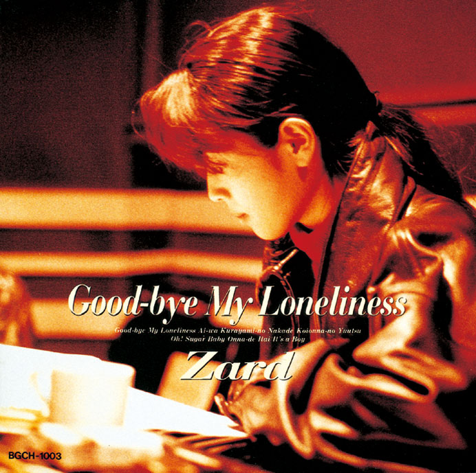 | |||||
| 1991.03.27 | |||||
| 2nd | Mou Sagasanai もう探さない |
01. Fushigi ne...（不思議ね…）(Lyrics: Izumi Sakai / Music: Tetsuro Oda / Arrangement: Masao Akashi) 02. Mou Sagasanai（もう探さない）(Lyrics: Izumi Sakai / Music: Tetsuro Oda / Arrangement: Masao Akashi) 03. Sunao ni Ienakute（素直に言えなくて）(Lyrics & Music: Izumi Sakai / Arrangement: Masao Akashi) 04. Hitori ga Suki（ひとりが好き）(Lyrics: Izumi Sakai / Music: Seiichiro Kuribayashi / Arrangement: Masao Akashi) 05. Forever(Lyrics: Izumi Sakai / Music: Daria Kawashima / Arrangement: Masao Akashi) 06. Lonely Soldier Boy(Lyrics: Izumi Sakai / Music: Seiichiro Kuribayashi / Arrangement: Masao Akashi) 07. Itsuka wa...（いつかは…）(Lyrics & Music: Izumi Sakai / Arrangement: Masao Akashi) | CD PO・b.gram – POCH-1111 (Original Edition) 1991.12.25 Cassette PO・b.gram – POTH-1111 (Original Edition) 1991.12.25 CD B-Gram Records – BGCH-1004 (Reissue) 1993.09.01 CD B-Gram Records – JBCJ-9070 (30th Anniversary Remasterd) 2021.09.15 |
Nippon TV Network quiz show “Magical Zunou Power!!”（マジカル頭脳パワー!!）Theme Song (#1) TV Asahi Network drama “Shichinin no Onna Bengoshi II”（七人の女弁護士II）Theme Song (#2) |
Wiki PV/CM |
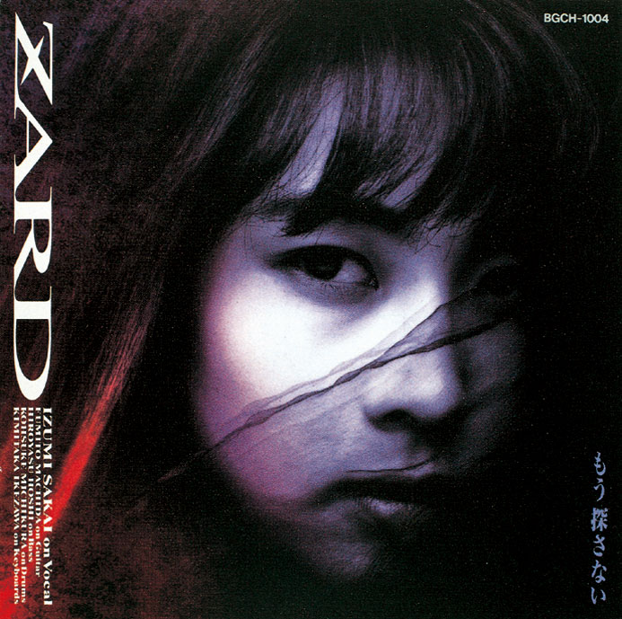 | |||||
| 1991.12.25 | |||||
| 3rd | HOLD ME | 01. Nemurenai Yoru wo Daite（眠れない夜を抱いて）(Lyrics: Izumi Sakai / Music: Tetsuro Oda / Arrangement: Masao Akashi, Daisuke Ikeda) 02. Dareka ga Matteru（誰かが待ってる）(Lyrics: Izumi Sakai / Music: Seiichiro Kuribayashi / Arrangement: Masao Akashi) 03. Sayonara Ienakute（サヨナラ言えなくて）(Lyrics: Izumi Sakai / Music: Seiichiro Kuribayashi / Arrangement: Daisuke Ikeda) 04. Ano Hohoemi wo Wasurenaide（あの微笑みを忘れないで）(Lyrics: Izumi Sakai / Music: Daria Kawashima / Arrangement: Masao Akashi) 05. Suki na You ni Odoritai no（好きなように踊りたいの）(Lyrics: Izumi Sakai / Music: Kazuya Izumi / Arrangement: Takeshi Hayama) 06. Dangerous Tonight(Lyrics: Izumi Sakai / Music: Seiichiro Kuribayashi / Arrangement: Masao Akashi) 07. Konna ni Aishitemo（こんなに愛しても）(Lyrics: Izumi Sakai / Music: Seiichiro Kuribayashi / Arrangement: Masao Akashi) 08. Why Don't You Leave Me Alone(Lyrics: Izumi Sakai / Music: Daria Kawashima / Arrangement: Takeshi Hayama) 09. Ai wa Nemutteru（愛は眠ってる）(Lyrics: Izumi Sakai / Music: Daria Kawashima / Arrangement: Daisuke Ikeda) 10. Tooi Hi no Nostalgia（遠い日のNostalgia）(Lyrics: Izumi Sakai / Music: Eisuke Mochizuki / Arrangement: Masao Akashi) 11. So Together(Lyrics: Izumi Sakai / Music: Daria Kawashima / Arrangement: Masao Akashi) | CD PO・b.gram – POCH-1145 (Original Edition) 1992.09.02 Cassette PO・b.gram – POTH-1145 (Original Edition) 1992.09.02 CD B-Gram Records – BGCH-1005 (Reissue) 1993.09.01 CD B-Gram Records – JBCJ-9071 (30th Anniversary Remasterd) 2021.09.15 |
TV Asahi Network wide show “Tonight”（トゥナイト）Ending Theme (#1) TV Asahi Network drama “Love Story wo Kimi ni '92 〜Nemurenai Yoru wo Daite〜”（ラブストーリーを君に'92〜眠れない夜を抱いて〜）Theme Song (#1) Nippon TV quiz show “Magical Zunou Power!!”（マジカル頭脳パワー!!）Ending Theme (#2) Fuji TV Network “Kinyou Entertainment”（金曜エンタテイメント）drama series “Udemakuri Kangofu”（腕まくり看護婦）Theme Song (#4) |
Wiki PV/CM |
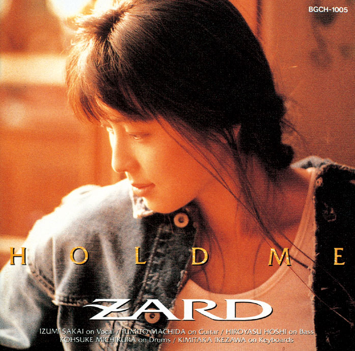 | |||||
| 1992.09.02 | |||||
| 4th | Yureru Omoi 揺れる想い |
01. Yureru Omoi（揺れる想い）(Lyrics: Izumi Sakai / Music: Tetsuro Oda / Arrangement: Masao Akashi) 02. Season(Lyrics: Izumi Sakai / Music: Seiichiro Kuribayashi / Arrangement: Takeshi Hayama) 03. Kimi ga Inai (B-version)（君がいない (B-version)）(Lyrics: Izumi Sakai / Music: Seiichiro Kuribayashi / Arrangement: Masao Akashi) 04. IN MY ARMS TONIGHT(Lyrics: Izumi Sakai / Music: Michiya Haruhata / Arrangement: Masao Akashi) 05. Anata wo Suki dakedo（あなたを好きだけど）(Lyrics: Izumi Sakai / Music: Seiichiro Kuribayashi / Arrangement: Masao Akashi) 06. Makenaide（負けないで）(Lyrics: Izumi Sakai / Music: Tetsuro Oda / Arrangement: Takeshi Hayama) 07. Listen to me(Lyrics: Izumi Sakai / Music: Daria Kawashima / Arrangement: Masao Akashi) 08. You and me (and…)(Lyrics: Izumi Sakai / Music: Tetsuro Oda / Arrangement: Takeshi Hayama) 09. I want you(Lyrics: Izumi Sakai / Music: Seiichiro Kuribayashi / Arrangement: Masao Akashi) 10. Futari no Natsu（二人の夏）(Lyrics: Izumi Sakai / Music: Seiichiro Kuribayashi / Arrangement: Masao Akashi) | CD B-Gram Records – BGCH-1001 1993.07.10 CD B-Gram Records – JBCJ-9072 (30th Anniversary Remasterd) 2021.09.15 |
Otsuka Pharmaceutical “Pocari Sweat” CM Song (#1) Chiba TV Network music program' “MU-GEN〜Music Generations〜” October 2006 Opening Theme (#1) Spotify (@SpotifyJP) “Anata no Hibi ni Ongaku wo: Jikka no Katazuke-hen 30-byou”（「あなたの日々に音楽を」実家の片付け篇 30秒）TV CM Song (#1) Yomiuri TV/Nippon TV Network drama “Kanojo no Kirai na Kanojo”（彼女の嫌いな彼女）Theme Song (#3) TBS TV Network drama “Gakkou ga Abunai”（学校があぶない）Ending Theme (#4) Mitsubishi Sekiyu（三菱石油）CF Song (#5) Fuji TV Network drama “Bokutachi no Drama Series”（ボクたちのドラマシリーズ）“Shiratori Reiko de Gozaimasu! Season 1”（白鳥麗子でございます! 第1シリーズ）Ending Theme (#6) TV Saitama “Sydney 2000 Olympic Asian Qualifiers Send-Off Match”（シドニーオリンピック2000アジア地区予選 壮行試合）Theme Song (#6) Nippon TV Network “13th All Japan High School Quiz Championship”（第13回全国高等学校クイズ選手権）Ending Theme (#6) NTT DoCoMo Vancouver Olympics-related “Ou'en in Vancouver-hen”（応援 in バンクーバー篇）CM Song from February 10, 2010 (#6) Nippon TV Network quiz variety show “Heart ni Just Meet”（ハートにジャストミート）Ending Theme (#7) |
Wiki PV/CM |
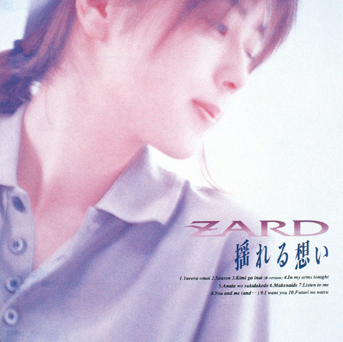 | |||||
| 1993.07.10 | |||||
| 5th | OH MY LOVE | 01. Oh my love(Lyrics: Izumi Sakai / Music: Tetsuro Oda / Arrangement: Masao Akashi) 02. Top Secret(Lyrics: Izumi Sakai / Music: Seiichiro Kuribayashi / Arrangement: Masao Akashi) 03. Kitto Wasurenai（きっと忘れない）(Lyrics: Izumi Sakai / Music: Tetsuro Oda / Arrangement: Masao Akashi) 04. Mou Sukoshi Ato Sukoshi...（もう少し あと少し…）(Lyrics: Izumi Sakai / Music: Seiichiro Kuribayashi / Arrangement: Masao Akashi) 05. Ame ni Nurete（雨に濡れて）(Lyrics: Izumi Sakai, Show Wesugi / Music: Seiichiro Kuribayashi / Arrangement: Masao Akashi) 06. Kono Ai ni Oyogi Tsukarete mo（この愛に泳ぎ疲れても）(Lyrics: Izumi Sakai / Music: Tetsuro Oda / Arrangement: Masao Akashi) 07. I still remember(Lyrics: Izumi Sakai / Music: Seiichiro Kuribayashi / Arrangement: Masao Akashi) 08. If you gimme smile(Lyrics: Izumi Sakai / Music: Seiichiro Kuribayashi / Arrangement: Masao Akashi) 09. Rainen no Natsu mo（来年の夏も）(Lyrics: Izumi Sakai / Music: Seiichiro Kuribayashi / Arrangement: Masao Akashi) 10. Anata ni Kaeritai（あなたに帰りたい）(Lyrics: Izumi Sakai / Music: Seiichiro Kuribayashi / Arrangement: Masao Akashi) | CD B-Gram Records – BGCH-1014 1994.06.04 CD B-Gram Records – JBCJ-9073 (30th Anniversary Remasterd) 2021.09.15 |
Fuji TV Network drama “Bokutachi no Drama Series”（ボクたちのドラマシリーズ）“Shiratori Reiko de Gozaimasu! Season 2”（白鳥麗子でございます! 第2シリーズ）Ending Theme (#3) TV Asahi Network drama “Lullaby Keiji '93”（ララバイ刑事'93）Ending Theme (#4) Kansai TV/Fuji TV Network drama “Ai to Giwaku no Suspense”（愛と疑惑のサスペンス）Opening Theme (#6) |
Wiki PV/CM |
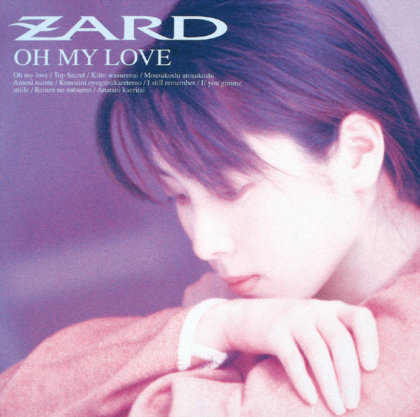 | |||||
| 1994.06.04 | |||||
| 6th | forever you | 01. Ima Sugu Ai ni Kite（今すぐ会いに来て）(Lyrics: Izumi Sakai / Music: Seiichiro Kuribayashi / Arrangement: Masao Akashi) 02. High Heel Nugi Sutete（ハイヒール脱ぎ捨てて）(Lyrics: Izumi Sakai / Music: Seiichiro Kuribayashi / Arrangement: Masao Akashi) 03. Forever you(Lyrics: Izumi Sakai / Music: Tetsuro Oda / Arrangement: Masao Akashi) 04. Mou Nigetari Shinai wa Omoide kara（もう逃げたりしないわ 想い出から）(Lyrics: Izumi Sakai / Music: Seiichiro Kuribayashi / Arrangement: Masao Akashi) 05. Anata wo Kanjiteitai（あなたを感じていたい）(Lyrics: Izumi Sakai / Music & Arrangement: Tetsuro Oda) 06. Kiraku ni Ikou（気楽に行こう）(Lyrics: Izumi Sakai / Music: Seiichiro Kuribayashi / Arrangement: Daisuke Ikeda) 07. I'm in love(Lyrics: Izumi Sakai / Music: Tetsuro Oda / Arrangement: Daisuke Ikeda) 08. Konna ni Soba ni Iru no ni（こんなにそばに居るのに）(Lyrics: Izumi Sakai / Music: Seiichiro Kuribayashi / Arrangement: Masao Akashi, Daisuke Ikeda) 09. Just believe in love(Lyrics: Izumi Sakai / Music: Michiya Haruhata / Arrangement: Takeshi Hayama) 10. Hitomi Sorasanaide（瞳そらさないで）(Lyrics: Izumi Sakai / Music: Tetsuro Oda / Arrangement: Masao Akashi) | CD B-Gram Records – JBCJ-1001 1995.03.10 CD B-Gram Records – JBCJ-9074 (30th Anniversary Remasterd) 2021.09.15 |
Fuji TV “OIOI TOKYO TASTE ROOMS” Ending Theme (#2) Documentary film “Princess Diana” Theme Song (#3) NTT DoCoMo pager “Palfy V”（パルフィー V）CM Song (#5) ASTEL Kansai（アステル関西）CF Song (#6) Tower Records Super Store Shibuya grand-opening commemorative song (#7) Boutique JOY（ブティックJOY）TV-CF Image Song (#8) TBS TV Network drama “Yureru Omoi”（揺れる想い）Theme Song (#9) |
Wiki PV/CM |
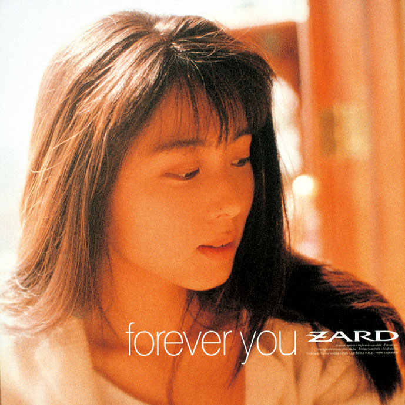 | |||||
| 1995.03.10 | |||||
| 7th | TODAY IS ANOTHER DAY | 01. My Friend（マイ フレンド）(Lyrics: Izumi Sakai / Music: Tetsuro Oda / Arrangement: Takeshi Hayama) 02. Kimi ga Ita kara（君がいたから）(Lyrics: Izumi Sakai / Music: Tetsuro Oda / Arrangement: Takeshi Hayama) 03. Sayonara wa Ima mo Kono Mune ni Imasu（サヨナラは今もこの胸に居ます）(Lyrics: Izumi Sakai / Music: Seiichiro Kuribayashi / Arrangement: Takeshi Hayama) 04. LOVE ~Nemurezu ni Kimi no Yokogao Zutto Miteitai~（LOVE ～眠れずに君の横顔ずっと見ていた～）(Lyrics: Izumi Sakai / Music: Seiichiro Kuribayashi / Arrangement: Masao Akashi) 05. DAN DAN Kokoro Hikareteku（DAN DAN 心魅かれてく）(Lyrics: Izumi Sakai / Music: Tetsuro Oda / Arrangement: Daisuke Ikeda) 06. Nemuri（眠り）(Lyrics & Music: Izumi Sakai / Arrangement: Daisuke Ikeda) 07. Kokoro wo Hiraite（心を開いて）(Lyrics: Izumi Sakai / Music: Tetsuro Oda / Arrangement: Daisuke Ikeda) 08. Totsuzen（突然）(Lyrics: Izumi Sakai / Music: Tetsuro Oda / Arrangement: Takeshi Hayama) 09. Kyou mo（今日も）(Lyrics: Izumi Sakai / Music: Tetsuro Oda / Arrangement: Takeshi Hayama) 10. Today is another day(Lyrics: Izumi Sakai / Music: Tetsuro Oda / Arrangement: Daisuke Ikeda) 11. Ai ga Mienai（愛が見えない）(Lyrics: Izumi Sakai / Music: Masazumi Ozawa / Arrangement: Takeshi Hayama) 12. Mitsumete Itai ne（見つめていたいね）(Lyrics: Izumi Sakai / Music: Seiichiro Kuribayashi / Arrangement: Masao Akashi) | CD B-Gram Records – JBCJ-1009 1996.07.08 CD B-Gram Records – JBCI-1006 (Promotional Release) CD B-Gram Records – JBCJ-9075 (30th Anniversary Remasterd) 2021.09.15 |
TV Asahi Network anime “SLAM DUNK”（スラムダンク）4th Ending Theme (#1) Fuji TV Network drama “Kagayaku Toki no Naka de”（輝く季節の中で）Insert Song (#2) Toei “Bokutachi no Eiga Series”（ぼくたちの映画シリーズ）film “Shiratori Reiko de Gozaimasu!”（白鳥麗子でございます!）Theme Song (#3) Nationwide 28-Station Network program “J-ROCK ARTIST Count Down 50” Ending Theme (#3) Otsuka Pharmaceutical “Pocari Sweat” CM Song (#7) Mitsubishi Motors Corporation ⑭ CM Song (#7) Nippon TV anime special “YAWARA! Zutto Kimi no Koto ga…”（YAWARA! ずっと君のことが…）Theme Song (#10) Bristol-Myers Squibb “SEA BREEZE '95” CM Song (#11) Nippon TV anime special “YAWARA! Zutto Kimi no Koto ga…”（YAWARA! ずっと君のことが…）Insert Song (#12) |
Wiki PV/CM |
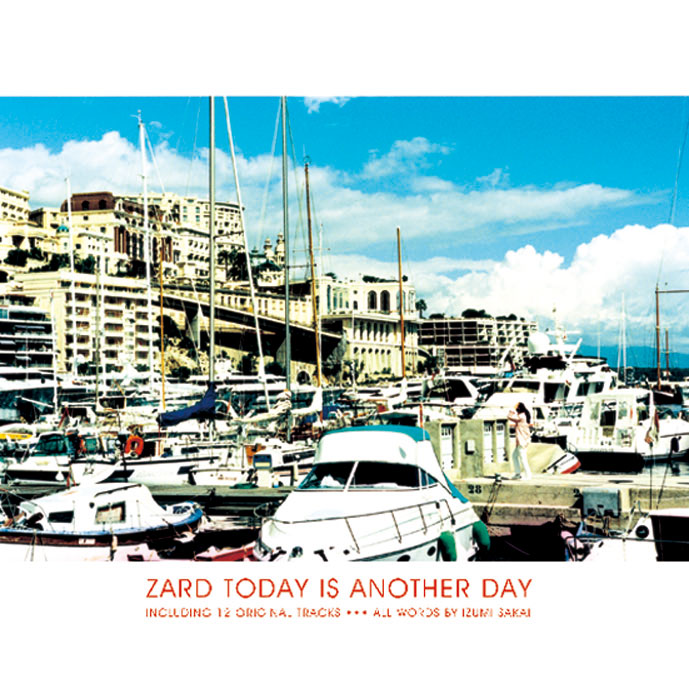 | |||||
| 1996.07.08 | |||||
| ZARD BLEND ~SUN & STONE~ | 01. Kimi ni Aitaku Nattara...（君に逢いたくなったら…）(Lyrics: Izumi Sakai / Music: Tetsuro Oda / Arrangement: Takeshi Hayama) 02. Yureru Omoi（揺れる想い）(Lyrics: Izumi Sakai / Music: Tetsuro Oda / Arrangement: Masao Akashi) 03. Kimi ga Inai（君がいない）(Lyrics: Izumi Sakai / Music: Seiichiro Kuribayashi / Arrangement: Masao Akashi) 04. Kokoro wo Hiraite（心を開いて）(Lyrics: Izumi Sakai / Music: Tetsuro Oda / Arrangement: Daisuke Ikeda) 05. Good-bye My Loneliness(Lyrics: Izumi Sakai / Music: Tetsuro Oda / Arrangement: Masao Akashi) 06. IN MY ARMS TONIGHT(Lyrics: Izumi Sakai / Music: Michiya Haruhata / Arrangement: Masao Akashi) 07. Ano Hohoemi wo Wasurenaide（あの微笑みを忘れないで）(Lyrics: Izumi Sakai / Music: Daria Kawashima / Arrangement: Masao Akashi) 08. Oh my love(Lyrics: Izumi Sakai / Music: Tetsuro Oda / Arrangement: Masao Akashi) 09. Rainen no Natsu mo（来年の夏も）(Lyrics: Izumi Sakai / Music: Seiichiro Kuribayashi / Arrangement: Masao Akashi) 10. High Heel Nugi Sutete（ハイヒール脱ぎ捨てて）(Lyrics: Izumi Sakai / Music: Seiichiro Kuribayashi / Arrangement: Masao Akashi) 11. Don't you see!(Lyrics: Izumi Sakai / Music: Seiichiro Kuribayashi / Arrangement: Takeshi Hayama) 12. Nemurenai Yoru wo Daite（眠れない夜を抱いて）(Lyrics: Izumi Sakai / Music: Tetsuro Oda / Arrangement: Masao Akashi, Daisuke Ikeda) 13. Konna ni Aishitemo ~Hold Me~（こんなに愛しても ～Hold Me～）(Lyrics: Izumi Sakai / Music: Seiichiro Kuribayashi / Arrangement: Masao Akashi) | CD B-Gram Records – JBCJ-1013 1997.04.23 CD B-Gram Records – JBCI-1008 (Promotional Release) |
TBS TV Network drama “Risou no Kekkon”（理想の結婚）Opening Theme (#1) Otsuka Pharmaceutical “Pocari Sweat” CM Song (#2) Chiba TV Network music program' “MU-GEN〜Music Generations〜” October 2006 Opening Theme (#2) Spotify (@SpotifyJP) “Anata no Hibi ni Ongaku wo: Jikka no Katazuke-hen 30-byou”（「あなたの日々に音楽を」実家の片付け篇 30秒）TV CM Song (#2) Yomiuri TV/Nippon TV Network drama “Kanojo no Kirai na Kanojo”（彼女の嫌いな彼女）Theme Song (#3) Otsuka Pharmaceutical “Pocari Sweat” CM Song (#4) Mitsubishi Motors Corporation ⑭ CM Song (#4) Fuji TV Network drama “Kekkon no Risou to Genjitsu”（結婚の理想と現実）Theme Song (#5) Clarion（クラリオン）Karaoke CF Song (#5) TBS TV Network drama “Gakkou ga Abunai”（学校があぶない）Ending Theme (#6) Fuji TV Network “Kinyou Entertainment”（金曜エンタテイメント）drama series “Udemakuri Kangofu”（腕まくり看護婦）Theme Song (#7) Fuji TV “OIOI TOKYO TASTE ROOMS” Ending Theme (#10) Fuji TV Network anime “Dragon Ball GT”（ドラゴンボールGT）2nd Ending Theme (#11) TV Asahi Network wide show “Tonight”（トゥナイト）Ending Theme (#12) TV Asahi Network drama “Love Story wo Kimi ni '92 〜Nemurenai Yoru wo Daite〜”（ラブストーリーを君に'92〜眠れない夜を抱いて〜）Theme Song (#12) |
Wiki PV/CM |
|
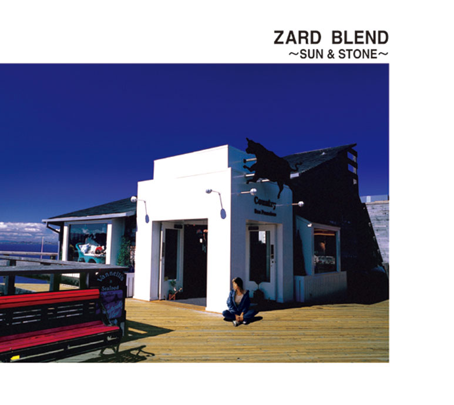 | |||||
| 1997.04.23 | |||||
| 8th | Eien 永遠 |
01. Eien（永遠）(Lyrics: Izumi Sakai / Music & Arrangement: Akihito Tokunaga) 02. My Baby Grand ~Nukumori ga Hoshikute~（My Baby Grand～ぬくもりが欲しくて～）(Lyrics: Izumi Sakai / Music: Tetsuro Oda / Arrangement: Daisuke Ikeda) 03. WAKE UP MAKE THE MORNING LAST ~Wasuregataki Hito e~（WAKE UP MAKE THE MORNING LAST～忘れがたき人へ～）(Lyrics: Izumi Sakai / Music: Hiroya Fukuyama / Arrangement: Hirohito Furui) 04. Brand New Love(Lyrics: Izumi Sakai / Music: Masaaki Watanuki / Arrangement: Akihito Tokunaga) 05. Unmei no Roulette Mawashite（運命のルーレット廻して）(Lyrics: Izumi Sakai / Music: Seiichiro Kuribayashi / Arrangement: Daisuke Ikeda) 06. Tooi Hoshi wo Kazoete（遠い星を数えて）(Lyrics: Izumi Sakai / Music: Seiichiro Kuribayashi / Arrangement: Akihito Tokunaga) 07. Atarashii Door ~Fuyu no Himawari~（新しいドア～冬のひまわり～）(Lyrics: Izumi Sakai / Music: Masato Kitano / Arrangement: Hirohito Furui) 08. GOOD DAY(Lyrics: Izumi Sakai / Music: Masaaki Watanuki / Arrangement: Daisuke Ikeda) 09. I feel fine, yeah(Lyrics: Izumi Sakai / Music: Makoto Miyoshi / Arrangement: Hirohito Furui) 10. Shoujo no Koro ni Modotta Mitai ni（少女の頃に戻ったみたいに）(Lyrics: Izumi Sakai / Music: Aika Ohno / Arrangement: Daisuke Ikeda) 11. Iki mo Dekinai（息もできない）(Lyrics: Izumi Sakai / Music: Tetsuro Oda / Arrangement: Takeshi Hayama) 12. Kaze ga Toori Nukeru Machi he（風が通り抜ける街へ）(Lyrics: Izumi Sakai / Music: Tetsuro Oda / Arrangement: Akihito Tokunaga) 13. Photograph（フォトグラフ）(Lyrics: Izumi Sakai / Music & Arrangement: Akihito Tokunaga) 14. Bonus 8cm CD-01 / CAN'T TAKE MY EYES OFF OF YOU(Lyrics: Bob Crewe / Music: Bob Gaudio / Arrangement: Yasuharu Konishi) 15. Bonus 8cm CD-02 / CAN'T TAKE MY EYES OFF OF YOU (readymade wizard mix short cuts)(Lyrics: Bob Crewe / Music: Bob Gaudio / Arrangement & Mix: Yasuharu Konishi) | CD B-Gram Records – JBCJ-1021 1999.02.17 8cm CD B-Gram Records – JBCJ-1021B (First-press 2-track Bonus CD: CAN'T TAKE MY EYES OFF OF YOU) 1999.02.17 CD B-Gram Records – JBCJ-9076 (30th Anniversary Remasterd) 2021.09.15 |
Yomiuri TV/Nippon TV Network drama “Shitsurakuen”（失楽園）Theme Song (#1) Canon “NEW EOS Kiss” CM Song (#1) NTT DoCoMo “DoCoMo '97 Winter”（ドコモ ’97-冬）CM Song (#2) Yomiuri TV/Nippon TV Network anime “Meitantei Conan”（名探偵コナン）Opening Theme (#5) Sapporo Breweries “Fuyu Monogatari”（冬物語）CM Song (#7) Beautylabo “Natural Color”（ナチュラルカラー）CM Song (#8) Fuji TV “Mezamashi Tenki”（めざまし天気）Theme Song (#9) Nationwide Toho Youga-kei Roadshow “Meitantei Conan Movie 02: 14-banme no Target”（名探偵コナン １４番目の標的）Theme Song (#10) Fuji TV Network anime “Chuuka Ichiban!”（中華一番!）2nd Opening Theme (#11) Japan Racing Association “'97 Summer JRA” Campaign Song (#12) Nippon TV drama “Haru no Suspense Special Keijitachi no Natsu”（春のサスペンススペシャル 刑事たちの夏）Theme Song (#13) |
Wiki PV/CM |
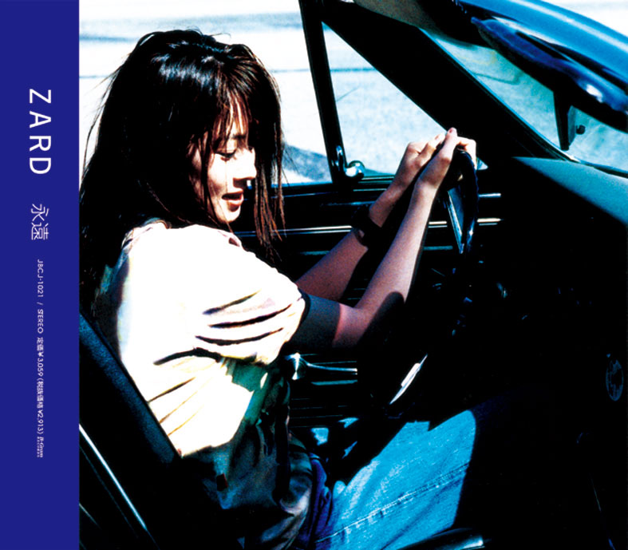 | |||||
| 1999.02.17 | |||||
| ZARD BEST The Single Collection ~Kiseki~ ZARD BEST The Single Collection～軌跡～ |
01. Makenaide（負けないで）(Lyrics: Izumi Sakai / Music: Tetsuro Oda / Arrangement: Takeshi Hayama) 02. Kimi ga Inai（君がいない）(Lyrics: Izumi Sakai / Music: Seiichiro Kuribayashi / Arrangement: Masao Akashi) 03. Yureru Omoi（揺れる想い）(Lyrics: Izumi Sakai / Music: Tetsuro Oda / Arrangement: Masao Akashi) 04. Hateshinai Yume wo（果てしない夢を）(Lyrics: Show Wesugi, Izumi Sakai / Music: Masayuki Deguchi / Arrangement: Masao Akashi) 05. Mou Sukoshi Ato Sukoshi...（もう少し あと少し…）(Lyrics: Izumi Sakai / Music: Seiichiro Kuribayashi / Arrangement: Masao Akashi) 06. Kitto Wasurenai（きっと忘れない）(Lyrics: Izumi Sakai / Music: Tetsuro Oda / Arrangement: Masao Akashi) 07. Kono Ai ni Oyogi Tsukarete mo（この愛に泳ぎ疲れても）(Lyrics: Izumi Sakai / Music: Tetsuro Oda / Arrangement: Masao Akashi) 08. Konna ni Soba ni Iru no ni（こんなにそばに居るのに）(Lyrics: Izumi Sakai / Music: Seiichiro Kuribayashi / Arrangement: Masao Akashi) 09. Just believe in love(Lyrics: Izumi Sakai / Music: Michiya Haruhata / Arrangement: Takeshi Hayama) 10. Ai ga Mienai（愛が見えない）(Lyrics: Izumi Sakai / Music: Masazumi Ozawa / Arrangement: Takeshi Hayama) 11. My Friend（マイ フレンド）(Lyrics: Izumi Sakai / Music: Tetsuro Oda / Arrangement: Takeshi Hayama) 12. Kokoro wo Hiraite（心を開いて）(Lyrics: Izumi Sakai / Music: Tetsuro Oda / Arrangement: Daisuke Ikeda) 13. Eien (Intro Piano Version)（永遠 (Intro Piano Version)）(Lyrics: Izumi Sakai / Music & Arrangement: Akihito Tokunaga) 14. Unmei no Roulette Mawashite (Re-mix Version)（運命のルーレット廻して (Re-mix Version)）(Lyrics: Izumi Sakai / Music: Seiichiro Kuribayashi / Arrangement: Daisuke Ikeda) | CD B-Gram Records – JBCJ-1023 1999.05.28 Enhanced CD-ROM B-Gram Records – JBCJ-1023Z (First-press bonus) 1999.05.28 |
Fuji TV Network drama “Bokutachi no Drama Series”（ボクたちのドラマシリーズ）“Shiratori Reiko de Gozaimasu! Season 1”（白鳥麗子でございます! 第1シリーズ）Ending Theme (#1) TV Saitama “Sydney 2000 Olympic Asian Qualifiers Send-Off Match”（シドニーオリンピック2000アジア地区予選 壮行試合）Theme Song (#1) Nippon TV Network “13th All Japan High School Quiz Championship”（第13回全国高等学校クイズ選手権）Ending Theme (#1) NTT DoCoMo Vancouver Olympics-related “Ou'en in Vancouver-hen”（応援 in バンクーバー篇）CM Song from February 10, 2010 (#1) Yomiuri TV/Nippon TV Network drama “Kanojo no Kirai na Kanojo”（彼女の嫌いな彼女）Theme Song (#2) Otsuka Pharmaceutical “Pocari Sweat” CM Song (#3) Chiba TV Network music program' “MU-GEN〜Music Generations〜” October 2006 Opening Theme (#3) Spotify (@SpotifyJP) “Anata no Hibi ni Ongaku wo: Jikka no Katazuke-hen 30-byou”（「あなたの日々に音楽を」実家の片付け篇 30秒）TV CM Song (#3) Nippon TV professional baseball broadcast image song (#4) TV Asahi Network drama “Lullaby Keiji '93”（ララバイ刑事'93）Ending Theme (#5) Fuji TV Network drama “Bokutachi no Drama Series”（ボクたちのドラマシリーズ）“Shiratori Reiko de Gozaimasu! Season 2”（白鳥麗子でございます! 第2シリーズ）Ending Theme (#6) Kansai TV/Fuji TV Network drama “Ai to Giwaku no Suspense”（愛と疑惑のサスペンス）Opening Theme (#7) Boutique JOY（ブティックJOY）TV-CF Image Song (#8) TBS TV Network drama “Yureru Omoi”（揺れる想い）Theme Song (#9) Bristol-Myers Squibb “SEA BREEZE '95” CM Song (#10) TV Asahi Network anime “SLAM DUNK”（スラムダンク）4th Ending Theme (#11) Otsuka Pharmaceutical “Pocari Sweat” CM Song (#12) Mitsubishi Motors Corporation ⑭ CM Song (#12) Yomiuri TV/Nippon TV Network drama “Shitsurakuen”（失楽園）Theme Song (#13) Canon “NEW EOS Kiss” CM Song (#13) Yomiuri TV/Nippon TV Network anime “Meitantei Conan”（名探偵コナン）Opening Theme (#14) |
Wiki PV/CM |
|
| 1999.05.28 | |||||
| ZARD BEST ~Request Memorial~ | 01. Don't you see!(Lyrics: Izumi Sakai / Music: Seiichiro Kuribayashi / Arrangement: Takeshi Hayama) 02. Anata wo Kanjiteitai（あなたを感じていたい）(Lyrics: Izumi Sakai / Music & Arrangement: Tetsuro Oda) 03. Iki mo Dekinai（息もできない）(Lyrics: Izumi Sakai / Music: Tetsuro Oda / Arrangement: Takeshi Hayama) 04. Kimi ni Aitaku Nattara...（君に逢いたくなったら…）(Lyrics: Izumi Sakai / Music: Tetsuro Oda / Arrangement: Takeshi Hayama) 05. Ano Hohoemi wo Wasurenaide（あの微笑みを忘れないで）(Lyrics: Izumi Sakai / Music: Daria Kawashima / Arrangement: Masao Akashi) 06. Oh my love(Lyrics: Izumi Sakai / Music: Tetsuro Oda / Arrangement: Masao Akashi) 07. Sayonara wa Ima mo Kono Mune ni Imasu（サヨナラは今もこの胸に居ます）(Lyrics: Izumi Sakai / Music: Seiichiro Kuribayashi / Arrangement: Takeshi Hayama) 08. My Baby Grand ~Nukumori ga Hoshikute~（My Baby Grand～ぬくもりが欲しくて～）(Lyrics: Izumi Sakai / Music: Tetsuro Oda / Arrangement: Daisuke Ikeda) 09. Forever you(Lyrics: Izumi Sakai / Music: Tetsuro Oda / Arrangement: Masao Akashi) 10. Totsuzen（突然）(Lyrics: Izumi Sakai / Music: Tetsuro Oda / Arrangement: Takeshi Hayama) 11. Tooi Hi no Nostalgia（遠い日のNostalgia）(Lyrics: Izumi Sakai / Music: Eisuke Mochizuki / Arrangement: Masao Akashi) 12. Ame ni Nurete（雨に濡れて）(Lyrics: Izumi Sakai, Show Wesugi / Music: Seiichiro Kuribayashi / Arrangement: Masao Akashi) 13. I still remember(Lyrics: Izumi Sakai / Music: Seiichiro Kuribayashi / Arrangement: Masao Akashi) 14. MIND GAMES(Lyrics: Izumi Sakai / Music: Masaaki Watanuki / Arrangement: Masaaki Watanuki, Hirohito Furui) | CD B-Gram Records – JBCJ-1024 1999.09.15 Enhanced CD-ROM B-Gram Records – JBCJ-1024Z (First-press bonus) 1999.09.15 |
Fuji TV Network anime “Dragon Ball GT”（ドラゴンボールGT）2nd Ending Theme (#1) NTT DoCoMo pager “Palfy V”（パルフィー V）CM Song (#2) Fuji TV Network anime “Chuuka Ichiban!”（中華一番!）2nd Opening Theme (#3) TBS TV Network drama “Risou no Kekkon”（理想の結婚）Opening Theme (#4) Fuji TV Network “Kinyou Entertainment”（金曜エンタテイメント）drama series “Udemakuri Kangofu”（腕まくり看護婦）Theme Song (#5) Toei “Bokutachi no Eiga Series”（ぼくたちの映画シリーズ）film “Shiratori Reiko de Gozaimasu!”（白鳥麗子でございます!）Theme Song (#7) Nationwide 28-Station Network program “J-ROCK ARTIST Count Down 50” Ending Theme (#7) NTT DoCoMo “DoCoMo '97 Winter”（ドコモ ’97-冬）CM Song (#8) Documentary film “Princess Diana” Theme Song (#9) Fuji TV Network sports program “Pro Yakyuu News”（プロ野球ニュース）Image Song (#14) Nippon Broadcasting System radio program “Show Up Nighter '99”（ショウアップナイター'99）Ending Theme (#14) |
Wiki PV/CM |
|
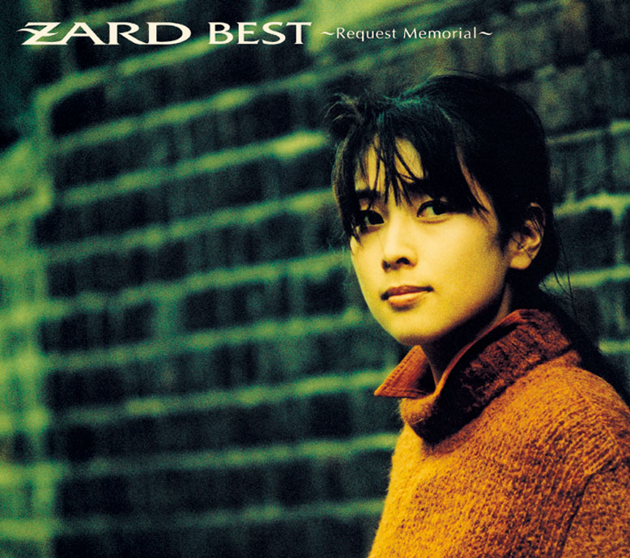 | |||||
| 1999.09.15 | |||||
| ZARD Cruising & Live ~Genteiban Live CD~ ZARD Cruising & Live ～限定盤ライヴCD～ |
01. Yureru Omoi（揺れる想い）(Lyrics: Izumi Sakai / Music: Tetsuro Oda / Arrangement: Masao Akashi) 02. Kimi ga Inai（君がいない）(Lyrics: Izumi Sakai / Music: Seiichiro Kuribayashi / Arrangement: Masao Akashi) 03. Kokoro wo Hiraite（心を開いて）(Lyrics: Izumi Sakai / Music: Tetsuro Oda / Arrangement: Daisuke Ikeda) 04. Don't you see!(Lyrics: Izumi Sakai / Music: Seiichiro Kuribayashi / Arrangement: Takeshi Hayama) 05. Sekai wa Kitto Mirai no Naka（世界はきっと未来の中）(Lyrics: Izumi Sakai / Music: Yuichiro Iwai / Arrangement: Akihito Tokunaga, Hirohito Furui, Kenji Shiojiri) 06. Photograph（フォトグラフ）(Lyrics: Izumi Sakai / Music & Arrangement: Akihito Tokunaga) 07. Mou Sukoshi Ato Sukoshi...（もう少し あと少し…）(Lyrics: Izumi Sakai / Music: Seiichiro Kuribayashi / Arrangement: Masao Akashi) 08. Nemurenai Yoru wo Daite（眠れない夜を抱いて）(Lyrics: Izumi Sakai / Music: Tetsuro Oda / Arrangement: Masao Akashi, Daisuke Ikeda) 09. My Baby Grand ~Nukumori ga Hoshikute~（My Baby Grand～ぬくもりが欲しくて～）(Lyrics: Izumi Sakai / Music: Tetsuro Oda / Arrangement: Daisuke Ikeda) 10. IN MY ARMS TONIGHT(Lyrics: Izumi Sakai / Music: Michiya Haruhata / Arrangement: Masao Akashi) 11. Ano Hohoemi wo Wasurenaide（あの微笑みを忘れないで）(Lyrics: Izumi Sakai / Music: Daria Kawashima / Arrangement: Masao Akashi) 12. Kono Ai ni Oyogi Tsukarete mo（この愛に泳ぎ疲れても）(Lyrics: Izumi Sakai / Music: Tetsuro Oda / Arrangement: Masao Akashi) 13. Encore 01 / Tooi Hoshi wo Kazoete（遠い星を数えて）(Lyrics: Izumi Sakai / Music: Seiichiro Kuribayashi / Arrangement: Akihito Tokunaga) 14. Encore 02 / Makenaide（負けないで）(Lyrics: Izumi Sakai / Music: Tetsuro Oda / Arrangement: Takeshi Hayama) | CD+CD-ROM+VHS B-Gram Records – JBCJ-1026 (300,000-copy Limited Edition) 2000.01.26 CD B-Gram Records – JBCI-1011 (Promotional Release) |
Otsuka Pharmaceutical “Pocari Sweat” CM Song (#1) Chiba TV Network music program' “MU-GEN〜Music Generations〜” October 2006 Opening Theme (#1) Spotify (@SpotifyJP) “Anata no Hibi ni Ongaku wo: Jikka no Katazuke-hen 30-byou”（「あなたの日々に音楽を」実家の片付け篇 30秒）TV CM Song (#1) Yomiuri TV/Nippon TV Network drama “Kanojo no Kirai na Kanojo”（彼女の嫌いな彼女）Theme Song (#2) Otsuka Pharmaceutical “Pocari Sweat” CM Song (#3) Mitsubishi Motors Corporation ⑭ CM Song (#3) Fuji TV Network anime “Dragon Ball GT”（ドラゴンボールGT）2nd Ending Theme (#4) TV Asahi Network drama “Maiko-san wa Meitantei!”（舞妓さんは名探偵!）Theme Song (#5) Nippon TV drama “Haru no Suspense Special Keijitachi no Natsu”（春のサスペンススペシャル 刑事たちの夏）Theme Song (#6) TV Asahi Network drama “Lullaby Keiji '93”（ララバイ刑事'93）Ending Theme (#7) TV Asahi Network wide show “Tonight”（トゥナイト）Ending Theme (#8) TV Asahi Network drama “Love Story wo Kimi ni '92 〜Nemurenai Yoru wo Daite〜”（ラブストーリーを君に'92〜眠れない夜を抱いて〜）Theme Song (#8) NTT DoCoMo “DoCoMo '97 Winter”（ドコモ ’97-冬）CM Song (#9) TBS TV Network drama “Gakkou ga Abunai”（学校があぶない）Ending Theme (#10) Fuji TV Network “Kinyou Entertainment”（金曜エンタテイメント）drama series “Udemakuri Kangofu”（腕まくり看護婦）Theme Song (#11) Kansai TV/Fuji TV Network drama “Ai to Giwaku no Suspense”（愛と疑惑のサスペンス）Opening Theme (#12) Fuji TV Network drama “Bokutachi no Drama Series”（ボクたちのドラマシリーズ）“Shiratori Reiko de Gozaimasu! Season 1”（白鳥麗子でございます! 第1シリーズ）Ending Theme (#14) TV Saitama “Sydney 2000 Olympic Asian Qualifiers Send-Off Match”（シドニーオリンピック2000アジア地区予選 壮行試合）Theme Song (#14) Nippon TV Network “13th All Japan High School Quiz Championship”（第13回全国高等学校クイズ選手権）Ending Theme (#14) NTT DoCoMo Vancouver Olympics-related “Ou'en in Vancouver-hen”（応援 in バンクーバー篇）CM Song from February 10, 2010 (#14) |
Wiki PV/CM |
|
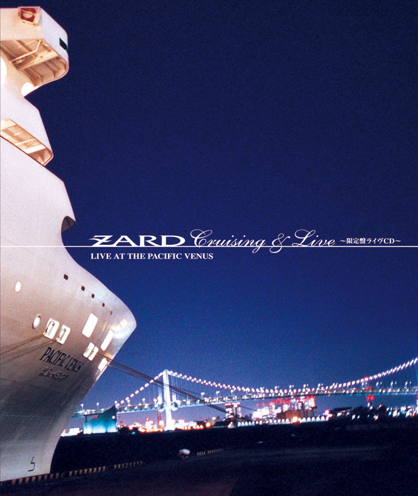 | |||||
| 2000.01.26 | |||||
| 9th | Toki no Tsubasa 時間（とき）の翼 |
01. Get U're Dream(Lyrics: Izumi Sakai / Music: Aika Ohno / Arrangement: Takeshi Hayama) 02. Kono Namida Hoshi ni Nare（この涙 星になれ）(Lyrics: Izumi Sakai / Music: Yuichiro Iwai / Arrangement: Hirohito Furui) 03. promised you ~with P-edition~(Lyrics: Izumi Sakai / Music: Seiichiro Kuribayashi / Arrangement: Cybersound) 04. Itai Kurai Kimi ga Afureteiru yo（痛いくらい君があふれているよ）(Lyrics: Izumi Sakai / Music & Arrangement: Kenji Shiojiri) 05. Mado no Soto wa Monochrome（窓の外はモノクローム）(Lyrics: Izumi Sakai / Music: Yuichiro Iwai / Arrangement: Yoshinobu Ohga) 06. O・mo・hi・de（お・も・ひ・で）(Lyrics: Izumi Sakai / Music: Hiroshi Terao / Arrangement: Hirohito Furui, Akihito Tokunaga) 07. Ashita Moshi Kimi ga Kowaretemo（明日もし君が壊れても）(Lyrics: Izumi Sakai / Music: Aika Ohno / Arrangement: Akihito Tokunaga) 08. Sekai wa Kitto Mirai no Naka ~another style 21~（世界はきっと未来の中～another style 21～）(Lyrics: Izumi Sakai / Music: Yuichiro Iwai / Arrangement: Akihito Tokunaga, Yoshinobu Ohga) 09. hero(Lyrics: Izumi Sakai / Music: Aika Ohno / Arrangement: Yoshinobu Ohga) 10. Yureru Omoi (Gomi's New York Remix)（揺れる想い (Gomi's New York Remix)）(Lyrics: Izumi Sakai / Music: Tetsuro Oda / Remix: Gomi) 11. Makenaide (Gomi's 10th Anniversary Special Mix)（負けないで (Gomi's 10th Anniversary Special Mix)）(Lyrics: Izumi Sakai / Music: Tetsuro Oda / Remix: Gomi) 12. Toki no Tsubasa（時間（とき）の翼）(Lyrics: Izumi Sakai / Music: Aika Ohno / Arrangement: Akihito Tokunaga) | CD B-Gram Records – JBCJ-1033 (Original 2001 Mix) 2001.02.15 CD B-Gram Records – JBCJ-9077 (30th Anniversary Rearranged Edition) 2021.09.15 |
NHK Sydney Olympics Broadcast Theme Song (#1) TV Asahi Network drama “Kasouken no Onna”（科捜研の女）Theme Song (#2) TV Asahi Network two-hour drama program “Doyou Wide Gekijou”（土曜ワイド劇場）Ending Theme (#3) Nestlé Japan “NESCAFÉ moment”（ネスカフェモーメント）CM Song (#4) Nippon TV “Shuukan Storyland”（週刊ストーリーランド）Ending Theme (#5) TV Asahi Network information program “Zeitaku na Kyuujitsu”（贅沢な休日）Theme Song (#6) “Change IZU 2000!”（チェンジ伊豆2000!）Image Song (#6) TV Asahi Network drama “Maiko-san wa Meitantei!”（舞妓さんは名探偵!）Theme Song (#8) Konami game “Tokimeki Memorial 3 ~Yakusoku no Ano Basho de~”（ときめきメモリアル3 〜約束のあの場所で〜）Sweet Ending Theme (#9) NTT West “FLET'S ISDN”（フレッツISDN）CF Song (#12) |
Wiki PV/CM |
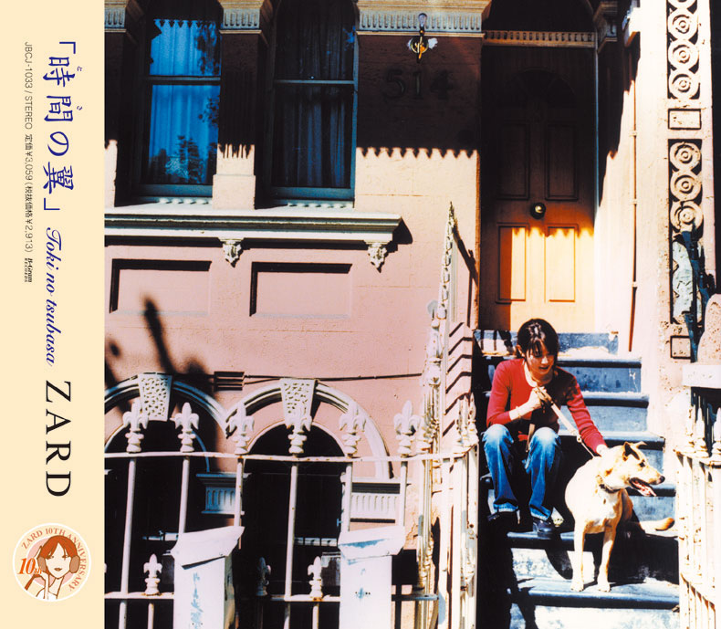 | |||||
| 2001.02.15 | |||||
| ZARD BLEND II ~LEAF & SNOW~ | 01. Watashi dake Mitsumete（私だけ見つめて）(Lyrics: Izumi Sakai / Music: Seiichiro Kuribayashi / Arrangement: Masao Akashi) 02. Anata wo Kanjiteitai（あなたを感じていたい）(Lyrics: Izumi Sakai / Music & Arrangement: Tetsuro Oda) 03. Mou Sukoshi Ato Sukoshi...（もう少し あと少し…）(Lyrics: Izumi Sakai / Music: Seiichiro Kuribayashi / Arrangement: Masao Akashi) 04. My Baby Grand ~Nukumori ga Hoshikute~（My Baby Grand～ぬくもりが欲しくて～）(Lyrics: Izumi Sakai / Music: Tetsuro Oda / Arrangement: Daisuke Ikeda) 05. Tasogare ni My Lonely Heart（黄昏にMy Lonely Heart）(Lyrics: Izumi Sakai / Music: Seiichiro Kuribayashi / Arrangement: Masao Akashi) 06. Boy(Lyrics: Izumi Sakai / Music: Seiichiro Kuribayashi / Arrangement: Masao Akashi) 07. Stray Love(Lyrics: Izumi Sakai / Music: Daria Kawashima / Arrangement: Masao Akashi) 08. Take me to your dream(Lyrics: Izumi Sakai / Music: Daria Kawashima / Arrangement: Masao Akashi) 09. You and me (and…)(Lyrics: Izumi Sakai / Music: Tetsuro Oda / Arrangement: Takeshi Hayama) 10. Anata ni Kaeritai（あなたに帰りたい）(Lyrics: Izumi Sakai / Music: Seiichiro Kuribayashi / Arrangement: Masao Akashi) 11. Just for you(Lyrics: Izumi Sakai / Music: Seiichiro Kuribayashi / Arrangement: Masao Akashi, Daisuke Ikeda) 12. Ready, Go!(Lyrics: Izumi Sakai / Music: Daria Kawashima / Arrangement: Takeshi Hayama) 13. Change my mind(Lyrics: Izumi Sakai / Music: Seiichiro Kuribayashi / Arrangement: Takeshi Hayama) 14. Kanariya（カナリヤ）(Lyrics: Izumi Sakai / Music: Seiichiro Kuribayashi / Arrangement: Masao Akashi) 15. Christmas Time (ZARD Version)（クリスマス タイム (ZARD Version)）(Lyrics: Izumi Sakai / Music: Seiichiro Kuribayashi / Arrangement: Akihito Tokunaga) 16. Eien ~Kimi to Boku to no Aida ni~（永遠～君と僕との間に～）(Lyrics: Izumi Sakai / Music & Arrangement: Akihito Tokunaga) 17. Hidden Track after Track 16 / Tooi Hoshi wo Kazoete（遠い星を数えて）(Lyrics: Izumi Sakai / Music: Seiichiro Kuribayashi / Arrangement: Akihito Tokunaga) | CD B-Gram Records – JBCJ-9002 2001.11.21 CD B-Gram Records – JBCI-1014 (Promotional Release) |
NTT DoCoMo pager “Palfy V”（パルフィー V）CM Song (#2) TV Asahi Network drama “Lullaby Keiji '93”（ララバイ刑事'93）Ending Theme (#3) NTT DoCoMo “DoCoMo '97 Winter”（ドコモ ’97-冬）CM Song (#4) Yomiuri TV-produced film “Natsu no Niwa 〜The Friends〜”（夏の庭〜The Friends〜）Ending Theme (#6) Canon “NEW EOS KISS” CF short version (#16) |
Wiki PV/CM |
|
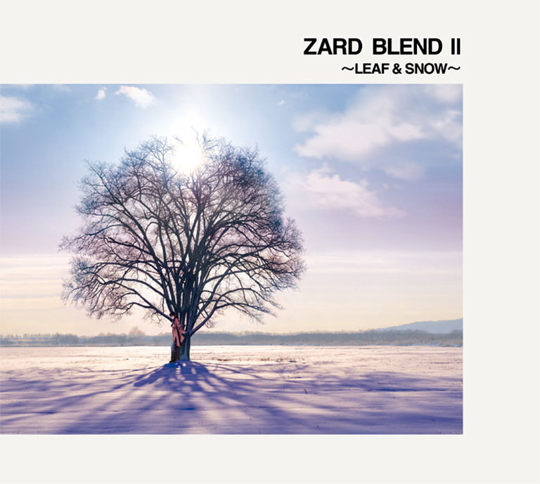 | |||||
| 2001.11.21 | |||||
| 10th | Tomatteita Tokei ga Ima Ugokidashita 止まっていた時計が今動き出した |
01. Ashita wo Yume Mite（明日を夢見て）(Lyrics: Izumi Sakai / Music: Aika Ohno / Arrangement: Satoru Kobayashi) 02. Toki no Tsubasa（時間（とき）の翼）(Lyrics: Izumi Sakai / Music: Aika Ohno / Arrangement: Satoru Kobayashi) 03. Motto Chikaku de Kimi no Yokogao Mitetai（もっと近くで君の横顔見ていたい）(Lyrics: Izumi Sakai / Music: Aika Ohno / Arrangement: Daisuke Ikeda) 04. pray(Lyrics: Izumi Sakai / Music: Akihito Tokunaga / Arrangement: Satoru Kobayashi) 05. Deai Soshite Wakare（出逢いそして別れ）(Lyrics: Izumi Sakai / Music: Michiya Haruhata / Arrangement: Michiya Haruhata, Daisuke Ikeda) 06. Tomatteita Tokei ga Ima Ugokidashita（止まっていた時計が今動き出した）(Lyrics: Izumi Sakai / Music: Yuri Nakamura / Arrangement: Akihito Tokunaga) 07. Hitomi Tojite（瞳閉じて）(Lyrics: Izumi Sakai / Music: Aika Ohno / Arrangement: Akihito Tokunaga) 08. Sawayakana Kimi no Kimochi (Album Ver.)（さわやかな君の気持ち (Album Ver.)）(Lyrics: Izumi Sakai / Music: Akihito Tokunaga / Arrangement: Dr.Terachi, Pierrot Le Fou) 09. Ai de Anata wo Sukuimashou（愛であなたを救いましょう）(Lyrics: Izumi Sakai / Music: Seiichiro Kuribayashi / Arrangement: Masao Akashi) 10. Tenshi no You na Egao de（天使のような笑顔で）(Lyrics: Izumi Sakai / Music: Aika Ohno / Arrangement: Akihito Tokunaga) 11. Kanashii Hodo Kyou wa Ame demo（悲しいほど 今日は雨でも）(Lyrics: Izumi Sakai / Music: Aika Ohno / Arrangement: Satoru Kobayashi) | CD B-Gram Records – JBCJ-9008 2004.01.28 CD B-Gram Records – JBCI-1016 (Promotional Released / 6-track Sampler) 2004.01.28 CD B-Gram Records – JBCJ-9078 (30th Anniversary Remasterd) 2021.09.15 |
Yomiuri TV/Nippon TV Network anime “Meitantei Conan”（名探偵コナン）Ending Theme (#1) NTT West “FLET'S ISDN”（フレッツISDN）CF Song (#2) Gekkeikan “Tsuki”（月）CM Song (#3) TV Asahi drama “Igi Ari! Onna Bengoshi Ooka Norie”（異議あり! 女弁護士大岡法江）Theme Song (#6) Fuji TV Network sports program “Kandou Factory Suporuto!”（感動ファクトリー すぽると!）Image Song (#7) Nivea-Kao “8×4 (Eight Four)” CM Song (#8) |
Wiki PV/CM |
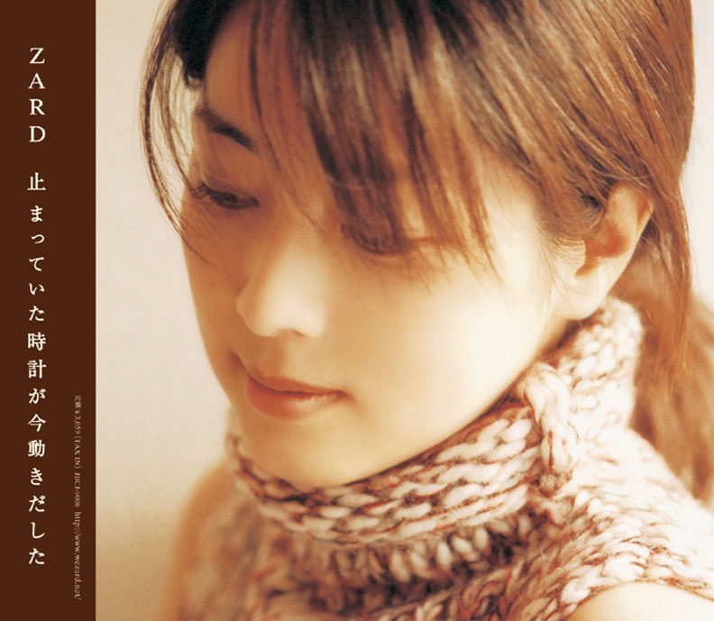 | |||||
| 2004.01.28 | |||||
| 11th | Kimi to no Distance 君とのDistance |
01. Natsu wo Matsu Sail (Ho) no You ni（夏を待つセイル(帆)のように）(Lyrics: Izumi Sakai / Music: Aika Ohno / Arrangement: Takeshi Hayama) 02. Sayonara made no Distance（サヨナラまでのディスタンス）(Lyrics: Izumi Sakai / Music: Aika Ohno / Arrangement: Takeshi Hayama) 03. Kakegae no Nai Mono（かけがえのないもの）(Lyrics: Izumi Sakai / Music: Aika Ohno / Arrangement: Satoru Kobayashi) 04. Kyou wa Yukkuri Hanasou（今日はゆっくり話そう）(Lyrics: Izumi Sakai / Music: Aika Ohno / Arrangement: Akihito Tokunaga) 05. Kimi to no Fureai（君とのふれあい）(Lyrics: Izumi Sakai / Music: Aika Ohno / Arrangement: Takeshi Hayama) 06. Separate Ways（セパレート・ウェイズ）(Lyrics: Izumi Sakai / Music: Aika Ohno / Arrangement: Hirohito Furui) 07. Last Good-bye(Lyrics: Izumi Sakai / Music: Yoshio Tatano / Arrangement: Takeshi Hayama) 08. Hoshi no Kagayaki yo（星のかがやきよ）(Lyrics: Izumi Sakai / Music: Aika Ohno / Arrangement: Takeshi Hayama) 09. Tsuki ni Negai wo（月に願いを）(Lyrics: Izumi Sakai / Music: Aika Ohno / Arrangement: Satoru Kobayashi) 10. Anata to Tomo ni Ikite Yuku（あなたと共に生きてゆく）(Lyrics: Izumi Sakai / Music: Tetsuro Oda / Arrangement: Satoru Kobayashi) 11. I can't tell(Lyrics: Izumi Sakai / Music: Seiichiro Kuribayashi / Arrangement: Takeshi Hayama) 12. good-night sweet heart(Lyrics: Izumi Sakai / Music: Akihito Tokunaga / Arrangement: Takeshi Hayama) 13. Kimi to Kyou no Koto wo Isshou Wasurenai（君と今日の事を一生忘れない）(Lyrics: Izumi Sakai / Music & Arrangement: Akihito Tokunaga) | CD B-Gram Records – JBCJ-9012 2005.09.07 CD B-Gram Records – JBCJ-9079 (30th Anniversary Remasterd) 2021.09.15 |
Nationwide Toho Youga-kei Roadshow “Meitantei Conan Movie 09: Suihei Senjou no Strategy”（名探偵コナン 水平線上の陰謀）Theme Song (#1) TBS TV Network dating variety show “Koisuru Hanikami!”（恋するハニカミ!）Theme Song (#3) Gekkeikan “Tsuki”（月）CM Song (#4) Yomiuri TV/Nippon TV Network anime “Meitantei Conan”（名探偵コナン）Opening Theme (#8) |
Wiki PV/CM |
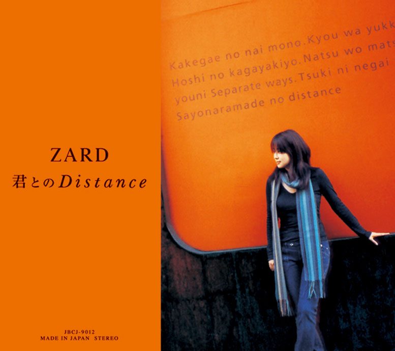 | |||||
| 2005.09.07 | |||||
| Golden Best ~15th Anniversary~ | ● Disc 0101. Good-bye My Loneliness(Lyrics: Izumi Sakai / Music: Tetsuro Oda / Arrangement: Masao Akashi) 02. Nemurenai Yoru wo Daite（眠れない夜を抱いて）(Lyrics: Izumi Sakai / Music: Tetsuro Oda / Arrangement: Masao Akashi, Daisuke Ikeda) 03. IN MY ARMS TONIGHT(Lyrics: Izumi Sakai / Music: Michiya Haruhata / Arrangement: Masao Akashi) 04. Makenaide（負けないで）(Lyrics: Izumi Sakai / Music: Tetsuro Oda / Arrangement: Takeshi Hayama) 05. Kimi ga Inai（君がいない）(Lyrics: Izumi Sakai / Music: Seiichiro Kuribayashi / Arrangement: Masao Akashi) 06. Yureru Omoi（揺れる想い）(Lyrics: Izumi Sakai / Music: Tetsuro Oda / Arrangement: Masao Akashi) 07. Mou Sukoshi Ato Sukoshi...（もう少し あと少し…）(Lyrics: Izumi Sakai / Music: Seiichiro Kuribayashi / Arrangement: Masao Akashi) 08. Kitto Wasurenai（きっと忘れない）(Lyrics: Izumi Sakai / Music: Tetsuro Oda / Arrangement: Masao Akashi) 09. Kono Ai ni Oyogi Tsukarete mo（この愛に泳ぎ疲れても）(Lyrics: Izumi Sakai / Music: Tetsuro Oda / Arrangement: Masao Akashi) 10. Oh my love(Lyrics: Izumi Sakai / Music: Tetsuro Oda / Arrangement: Masao Akashi) 11. Konna ni Soba ni Iru no ni（こんなにそばに居るのに）(Lyrics: Izumi Sakai / Music: Seiichiro Kuribayashi / Arrangement: Masao Akashi) 12. Anata wo Kanjiteitai（あなたを感じていたい）(Lyrics: Izumi Sakai / Music & Arrangement: Tetsuro Oda) 13. Ai ga Mienai（愛が見えない）(Lyrics: Izumi Sakai / Music: Masazumi Ozawa / Arrangement: Takeshi Hayama) 14. Sayonara wa Ima mo Kono Mune ni Imasu（サヨナラは今もこの胸に居ます）(Lyrics: Izumi Sakai / Music: Seiichiro Kuribayashi / Arrangement: Takeshi Hayama) ● Disc 0201. My Friend（マイ フレンド）(Lyrics: Izumi Sakai / Music: Tetsuro Oda / Arrangement: Takeshi Hayama) 02. Kokoro wo Hiraite（心を開いて）(Lyrics: Izumi Sakai / Music: Tetsuro Oda / Arrangement: Daisuke Ikeda) 03. Today is another day(Lyrics: Izumi Sakai / Music: Tetsuro Oda / Arrangement: Daisuke Ikeda) 04. Don't you see!(Lyrics: Izumi Sakai / Music: Seiichiro Kuribayashi / Arrangement: Takeshi Hayama) 05. Eien（永遠）(Lyrics: Izumi Sakai / Music & Arrangement: Akihito Tokunaga) 06. My Baby Grand ~Nukumori ga Hoshikute~（My Baby Grand～ぬくもりが欲しくて～）(Lyrics: Izumi Sakai / Music: Tetsuro Oda / Arrangement: Daisuke Ikeda) 07. Unmei no Roulette Mawashite（運命のルーレット廻して）(Lyrics: Izumi Sakai / Music: Seiichiro Kuribayashi / Arrangement: Daisuke Ikeda) 08. Get U're Dream(Lyrics: Izumi Sakai / Music: Aika Ohno / Arrangement: Takeshi Hayama) 09. Motto Chikaku de Kimi no Yokogao Mitetai（もっと近くで君の横顔見ていたい）(Lyrics: Izumi Sakai / Music: Aika Ohno / Arrangement: Daisuke Ikeda) 10. Kyou wa Yukkuri Hanasou（今日はゆっくり話そう）(Lyrics: Izumi Sakai / Music: Aika Ohno / Arrangement: Akihito Tokunaga) 11. Hoshi no Kagayaki yo（星のかがやきよ）(Lyrics: Izumi Sakai / Music: Aika Ohno / Arrangement: Takeshi Hayama) 12. Natsu wo Matsu Sail (Ho) no You ni（夏を待つセイル(帆)のように）(Lyrics: Izumi Sakai / Music: Aika Ohno / Arrangement: Takeshi Hayama) 13. Heart ni Hi wo Tsukete（ハートに火をつけて）(Lyrics: Izumi Sakai / Music: Aika Ohno / Arrangement: Takeshi Hayama) | 2CD+DVD B-Gram Records – JBCJ-9013-14 (Limited AQUA ~Summer~ Edition) 2006.10.25 2CD+DVD B-Gram Records – JBCJ-9015-16 (Limited CRYSTAL ~Autumn to Winter~ Edition) 2006.10.25 2CD+DVD B-Gram Records – JBCJ-9017-18 (Limited DREAM ~Spring~ Edition) 2006.10.25 2CD B-Gram Records – JBCJ-9019-20 (Regular Edition) 2006.10.25 4LP B-Gram Records – JBJJ-9001-04 (Golden Best ~35th Anniversary Vinyl Edition~) 2026.02.04 |
Fuji TV Network drama “Kekkon no Risou to Genjitsu”（結婚の理想と現実）Theme Song (Disc 1 / #1) Clarion（クラリオン）Karaoke CF Song (Disc 1 / #1) TV Asahi Network wide show “Tonight”（トゥナイト）Ending Theme (Disc 1 / #2) TV Asahi Network drama “Love Story wo Kimi ni '92 〜Nemurenai Yoru wo Daite〜”（ラブストーリーを君に'92〜眠れない夜を抱いて〜）Theme Song (Disc 1 / #2) TBS TV Network drama “Gakkou ga Abunai”（学校があぶない）Ending Theme (Disc 1 / #3) Fuji TV Network drama “Bokutachi no Drama Series”（ボクたちのドラマシリーズ）“Shiratori Reiko de Gozaimasu! Season 1”（白鳥麗子でございます! 第1シリーズ）Ending Theme (Disc 1 / #4) TV Saitama “Sydney 2000 Olympic Asian Qualifiers Send-Off Match”（シドニーオリンピック2000アジア地区予選 壮行試合）Theme Song (Disc 1 / #4) Nippon TV Network “13th All Japan High School Quiz Championship”（第13回全国高等学校クイズ選手権）Ending Theme (Disc 1 / #4) NTT DoCoMo Vancouver Olympics-related “Ou'en in Vancouver-hen”（応援 in バンクーバー篇）CM Song from February 10, 2010 (Disc 1 / #4) Yomiuri TV/Nippon TV Network drama “Kanojo no Kirai na Kanojo”（彼女の嫌いな彼女）Theme Song (Disc 1 / #5) Otsuka Pharmaceutical “Pocari Sweat” CM Song (Disc 1 / #6) Chiba TV Network music program' “MU-GEN〜Music Generations〜” October 2006 Opening Theme (Disc 1 / #6) Spotify (@SpotifyJP) “Anata no Hibi ni Ongaku wo: Jikka no Katazuke-hen 30-byou”（「あなたの日々に音楽を」実家の片付け篇 30秒）TV CM Song (Disc 1 / #6) TV Asahi Network drama “Lullaby Keiji '93”（ララバイ刑事'93）Ending Theme (Disc 1 / #7) Fuji TV Network drama “Bokutachi no Drama Series”（ボクたちのドラマシリーズ）“Shiratori Reiko de Gozaimasu! Season 2”（白鳥麗子でございます! 第2シリーズ）Ending Theme (Disc 1 / #8) Kansai TV/Fuji TV Network drama “Ai to Giwaku no Suspense”（愛と疑惑のサスペンス）Opening Theme (Disc 1 / #9) Boutique JOY（ブティックJOY）TV-CF Image Song (Disc 1 / #11) NTT DoCoMo pager “Palfy V”（パルフィー V）CM Song (Disc 1 / #12) Bristol-Myers Squibb “SEA BREEZE '95” CM Song (Disc 1 / #13) Toei “Bokutachi no Eiga Series”（ぼくたちの映画シリーズ）film “Shiratori Reiko de Gozaimasu!”（白鳥麗子でございます!）Theme Song (Disc 1 / #14) Nationwide 28-Station Network program “J-ROCK ARTIST Count Down 50” Ending Theme (Disc 1 / #14) TV Asahi Network anime “SLAM DUNK”（スラムダンク）4th Ending Theme (Disc 2 / #1) Otsuka Pharmaceutical “Pocari Sweat” CM Song (Disc 2 / #2) Mitsubishi Motors Corporation ⑭ CM Song (Disc 2 / #2) Nippon TV anime special “YAWARA! Zutto Kimi no Koto ga…”（YAWARA! ずっと君のことが…）Theme Song (Disc 2 / #3) Fuji TV Network anime “Dragon Ball GT”（ドラゴンボールGT）2nd Ending Theme (Disc 2 / #4) Yomiuri TV/Nippon TV Network drama “Shitsurakuen”（失楽園）Theme Song (Disc 2 / #5) Canon “NEW EOS Kiss” CM Song (Disc 2 / #5) NTT DoCoMo “DoCoMo '97 Winter”（ドコモ ’97-冬）CM Song (Disc 2 / #6) Yomiuri TV/Nippon TV Network anime “Meitantei Conan”（名探偵コナン）Opening Theme (Disc 2 / #7) NHK Sydney Olympics Broadcast Theme Song (Disc 2 / #8) Gekkeikan “Tsuki”（月）CM Song (Disc 2 / #9) Gekkeikan “Tsuki”（月）CM Song (Disc 2 / #10) Yomiuri TV/Nippon TV Network anime “Meitantei Conan”（名探偵コナン）Opening Theme (Disc 2 / #11) Nationwide Toho Youga-kei Roadshow “Meitantei Conan Movie 09: Suihei Senjou no Strategy”（名探偵コナン 水平線上の陰謀）Theme Song (Disc 2 / #12) TBS TV Network “Ai no Gekijou”（愛の劇場）drama “Suteki ni Common!”（すてきにコモン!）Theme Song (Disc 2 / #13) |
Wiki PV/CM |
|
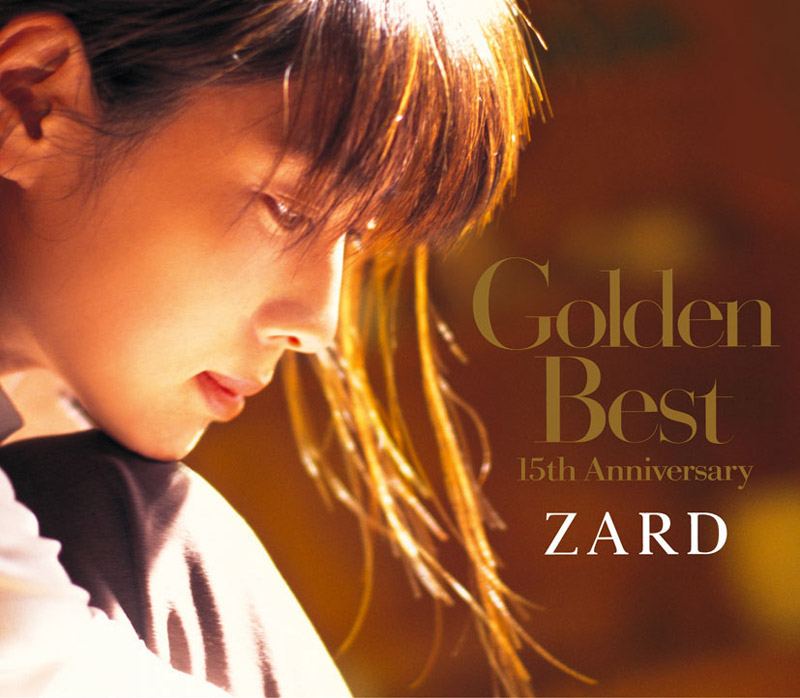 | |||||
| 2006.10.25 | |||||
| Soffio di vento ~Best of IZUMI SAKAI Selection~ | 01. Ano Hohoemi wo Wasurenaide（あの微笑みを忘れないで）(Lyrics: Izumi Sakai / Music: Daria Kawashima / Arrangement: Masao Akashi) 02. Tasogare ni My Lonely Heart（黄昏にMy Lonely Heart）(Lyrics: Izumi Sakai / Music: Seiichiro Kuribayashi / Arrangement: Masao Akashi) 03. Ai ga Mienai（愛が見えない）(Lyrics: Izumi Sakai / Music: Masazumi Ozawa / Arrangement: Takeshi Hayama) 04. Sayonara wa Ima mo Kono Mune ni Imasu（サヨナラは今もこの胸に居ます）(Lyrics: Izumi Sakai / Music: Seiichiro Kuribayashi / Arrangement: Takeshi Hayama) 05. Hitori ga Suki（ひとりが好き）(Lyrics: Izumi Sakai / Music: Seiichiro Kuribayashi / Arrangement: Masao Akashi) 06. Anata ni Kaeritai（あなたに帰りたい）(Lyrics: Izumi Sakai / Music: Seiichiro Kuribayashi / Arrangement: Masao Akashi) 07. So Together(Lyrics: Izumi Sakai / Music: Daria Kawashima / Arrangement: Masao Akashi) 08. Tooi Hoshi wo Kazoete（遠い星を数えて）(Lyrics: Izumi Sakai / Music: Seiichiro Kuribayashi / Arrangement: Akihito Tokunaga) 09. Tooi Hi no Nostalgia（遠い日のNostalgia）(Lyrics: Izumi Sakai / Music: Eisuke Mochizuki / Arrangement: Masao Akashi) 10. Rainen no Natsu mo（来年の夏も）(Lyrics: Izumi Sakai / Music: Seiichiro Kuribayashi / Arrangement: Masao Akashi) 11. Kakegae no Nai Mono（かけがえのないもの）(Lyrics: Izumi Sakai / Music: Aika Ohno / Arrangement: Satoru Kobayashi) 12. Boy(Lyrics: Izumi Sakai / Music: Seiichiro Kuribayashi / Arrangement: Masao Akashi) 13. Mitsumete Itai ne（見つめていたいね）(Lyrics: Izumi Sakai / Music: Seiichiro Kuribayashi / Arrangement: Masao Akashi) | CD+DVD B-Gram Records – JBCJ-9023 (Bonus DVD: JBBJ-9023) 2007.08.15 |
Fuji TV Network “Kinyou Entertainment”（金曜エンタテイメント）drama series “Udemakuri Kangofu”（腕まくり看護婦）Theme Song (#1) Bristol-Myers Squibb “SEA BREEZE '95” CM Song (#3) Toei “Bokutachi no Eiga Series”（ぼくたちの映画シリーズ）film “Shiratori Reiko de Gozaimasu!”（白鳥麗子でございます!）Theme Song (#4) Nationwide 28-Station Network program “J-ROCK ARTIST Count Down 50” Ending Theme (#4) TBS TV Network dating variety show “Koisuru Hanikami!”（恋するハニカミ!）Theme Song (#11) Yomiuri TV-produced film “Natsu no Niwa 〜The Friends〜”（夏の庭〜The Friends〜）Ending Theme (#12) Nippon TV anime special “YAWARA! Zutto Kimi no Koto ga…”（YAWARA! ずっと君のことが…）Insert Song (#13) |
Wiki PV/CM |
|
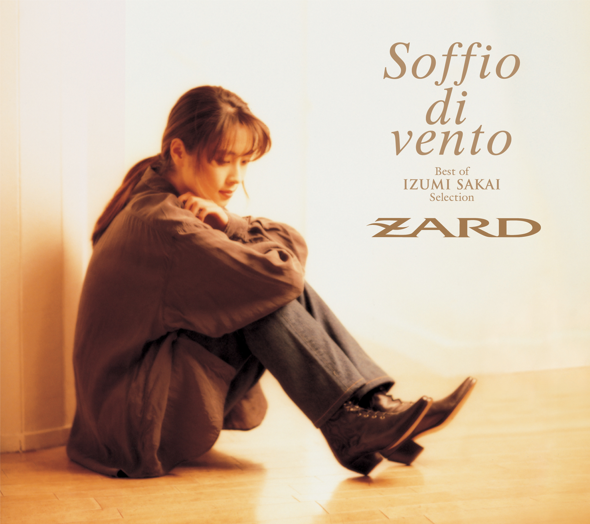 | |||||
| 2007.08.15 | |||||
| Brezza di mare ~dedicated to IZUMI SAKAI~ | 01. Hitomi Tojite（瞳閉じて）(Lyrics: Izumi Sakai / Music: Aika Ohno / Arrangement: Akihito Tokunaga) 02. Ashita wo Yume Mite（明日を夢見て）(Lyrics: Izumi Sakai / Music: Aika Ohno / Arrangement: Satoru Kobayashi) 03. Kaze ga Toori Nukeru Machi he（風が通り抜ける街へ）(Lyrics: Izumi Sakai / Music: Tetsuro Oda / Arrangement: Akihito Tokunaga) 04. I'm in love(Lyrics: Izumi Sakai / Music: Tetsuro Oda / Arrangement: Daisuke Ikeda) 05. Kimi ga Inai (B-version)（君がいない (B-version)）(Lyrics: Izumi Sakai / Music: Seiichiro Kuribayashi / Arrangement: Masao Akashi) 06. Mou Sagasanai（もう探さない）(Lyrics: Izumi Sakai / Music: Tetsuro Oda / Arrangement: Masao Akashi) 07. promised you(Lyrics: Izumi Sakai / Music: Seiichiro Kuribayashi / Arrangement: Cybersound) 08. Kanashii Hodo Anata ga Suki（悲しいほど貴方が好き）(Lyrics: Izumi Sakai / Music: Aika Ohno / Arrangement: Takeshi Hayama) 09. Kimi ga Ita kara (di mare version)（君がいたから (di mare version)）(Lyrics: Izumi Sakai / Music: Tetsuro Oda / Arrangement: Takeshi Hayama) 10. Tomatteita Tokei ga Ima Ugokidashita（止まっていた時計が今動き出した）(Lyrics: Izumi Sakai / Music: Yuri Nakamura / Arrangement: Akihito Tokunaga) 11. Sawayakana Kimi no Kimochi（さわやかな君の気持ち）(Lyrics: Izumi Sakai / Music & Arrangement: Akihito Tokunaga) 12. Shoujo no Koro ni Modotta Mitai ni（少女の頃に戻ったみたいに）(Lyrics: Izumi Sakai / Music: Aika Ohno / Arrangement: Daisuke Ikeda) 13. Sekai wa Kitto Mirai no Naka (di mare version)（世界はきっと未来の中 (di mare version)）(Lyrics: Izumi Sakai / Music: Yuichiro Iwai / Arrangement: Akihito Tokunaga, Hirohito Furui, Kenji Shiojiri) 14. Itsuka wa...（いつかは…）(Lyrics & Music: Izumi Sakai / Arrangement: Masao Akashi) | CD+DVD B-Gram Records – JBCJ-9024 (Bonus DVD: JBBJ-9024) 2007.08.15 |
Fuji TV Network sports program “Kandou Factory Suporuto!”（感動ファクトリー すぽると!）Image Song (#1) Yomiuri TV/Nippon TV Network anime “Meitantei Conan”（名探偵コナン）Ending Theme (#2) Japan Racing Association “'97 Summer JRA” Campaign Song (#3) Tower Records Super Store Shibuya grand-opening commemorative song (#4) Yomiuri TV/Nippon TV Network drama “Kanojo no Kirai na Kanojo”（彼女の嫌いな彼女）Theme Song (#5) TV Asahi Network drama “Shichinin no Onna Bengoshi II”（七人の女弁護士II）Theme Song (#6) TV Asahi Network two-hour drama program “Doyou Wide Gekijou”（土曜ワイド劇場）Ending Theme (#7) Yomiuri TV/Nippon TV Network anime “Meitantei Conan”（名探偵コナン）Ending Theme (#8) Fuji TV Network drama “Kagayaku Toki no Naka de”（輝く季節の中で）Insert Song (#9) TV Asahi drama “Igi Ari! Onna Bengoshi Ooka Norie”（異議あり! 女弁護士大岡法江）Theme Song (#10) Nivea-Kao “8×4 (Eight Four)” CM Song (#11) Nationwide Toho Youga-kei Roadshow “Meitantei Conan Movie 02: 14-banme no Target”（名探偵コナン １４番目の標的）Theme Song (#12) TV Asahi Network drama “Maiko-san wa Meitantei!”（舞妓さんは名探偵!）Theme Song (#13) |
Wiki PV/CM |
|
| 2007.08.15 | |||||
| ZARD Request Best ~beautiful memory~ | ● Disc 0101. Glorious Mind（グロリアス マインド）(Lyrics: Izumi Sakai / Music: Aika Ohno / Arrangement: Takeshi Hayama) 02. Ready, Go!(Lyrics: Izumi Sakai / Music: Daria Kawashima / Arrangement: Takeshi Hayama) 03. Totsuzen（突然）(Lyrics: Izumi Sakai / Music: Tetsuro Oda / Arrangement: Takeshi Hayama) 04. Kimi ni Aitaku Nattara...（君に逢いたくなったら…）(Lyrics: Izumi Sakai / Music: Tetsuro Oda / Arrangement: Takeshi Hayama) 05. High Heel Nugi Sutete（ハイヒール脱ぎ捨てて）(Lyrics: Izumi Sakai / Music: Seiichiro Kuribayashi / Arrangement: Masao Akashi) 06. Konna ni Aishitemo（こんなに愛しても）(Lyrics: Izumi Sakai / Music: Seiichiro Kuribayashi / Arrangement: Masao Akashi) 07. Futari no Natsu（二人の夏）(Lyrics: Izumi Sakai / Music: Seiichiro Kuribayashi / Arrangement: Masao Akashi) 08. Ashita Moshi Kimi ga Kowaretemo（明日もし君が壊れても）(Lyrics: Izumi Sakai / Music: Aika Ohno / Arrangement: Takeshi Hayama) 09. Kimi to no Fureai（君とのふれあい）(Lyrics: Izumi Sakai / Music: Aika Ohno / Arrangement: Takeshi Hayama) 10. Toki no Tsubasa（時間（とき）の翼）(Lyrics: Izumi Sakai / Music: Aika Ohno / Arrangement: Satoru Kobayashi) 11. Kakegae no Nai Mono（かけがえのないもの）(Lyrics: Izumi Sakai / Music: Aika Ohno / Arrangement: Satoru Kobayashi) 12. Yureru Omoi ('07 Live Ver.)（揺れる想い ('07 Live Ver.)）(Lyrics: Izumi Sakai / Music: Tetsuro Oda / Arrangement: Masao Akashi / Live-performance adaptation: Uncredited) 13. Eien ('07 Live Ver.)（永遠 ('07 Live Ver.)）(Lyrics: Izumi Sakai / Music: Akihito Tokunaga / Arrangement: Akihito Tokunaga / Live-performance adaptation: Uncredited) 14. My Friend ('07 Live Ver.)（マイ フレンド ('07 Live Ver.)）(Lyrics: Izumi Sakai / Music: Tetsuro Oda / Arrangement: Takeshi Hayama / Live-performance adaptation: Uncredited) 15. Don't you see! ('07 Live Ver.)(Lyrics: Izumi Sakai / Music: Seiichiro Kuribayashi / Arrangement: Takeshi Hayama / Live-performance adaptation: Uncredited) ● Disc 0201. Iki mo Dekinai（息もできない）(Lyrics: Izumi Sakai / Music: Tetsuro Oda / Arrangement: Takeshi Hayama) 02. Atarashii Door ~Fuyu no Himawari~（新しいドア～冬のひまわり～）(Lyrics: Izumi Sakai / Music: Masato Kitano / Arrangement: Hirohito Furui) 03. Forever you(Lyrics: Izumi Sakai / Music: Tetsuro Oda / Arrangement: Masao Akashi) 04. Ano Hohoemi wo Wasurenaide（あの微笑みを忘れないで）(Lyrics: Izumi Sakai / Music: Daria Kawashima / Arrangement: Masao Akashi) 05. Fushigi ne...（不思議ね…）(Lyrics: Izumi Sakai / Music: Tetsuro Oda / Arrangement: Masao Akashi) 06. Awai Yuki ga Tokete（淡い雪がとけて）(Lyrics: Izumi Sakai / Music: Hiroshi Terao / Arrangement: Akihito Tokunaga) 07. Photograph（フォトグラフ）(Lyrics: Izumi Sakai / Music & Arrangement: Akihito Tokunaga) 08. hero(Lyrics: Izumi Sakai / Music: Aika Ohno / Arrangement: Takeshi Hayama) 09. Love is Gone(Lyrics: Izumi Sakai / Music: Masaaki Watanuki / Arrangement: Takeshi Hayama) 10. Season(Lyrics: Izumi Sakai / Music: Seiichiro Kuribayashi / Arrangement: Takeshi Hayama) 11. Ame ni Nurete（雨に濡れて）(Lyrics: Izumi Sakai, Show Wesugi / Music: Seiichiro Kuribayashi / Arrangement: Masao Akashi) 12. Kokoro wo Hiraite ('07 Live Ver.)（心を開いて ('07 Live Ver.)）(Lyrics: Izumi Sakai / Music: Tetsuro Oda / Arrangement: Daisuke Ikeda / Live-performance adaptation: Uncredited) 13. Shoujo no Koro ni Modotta Mitai ni ('07 Live Ver.)（少女の頃に戻ったみたいに ('07 Live Ver.)）(Lyrics: Izumi Sakai / Music: Aika Ohno / Arrangement: Daisuke Ikeda / Live-performance adaptation: Uncredited) 14. Kimi ga Inai ('07 Live Ver.)（君がいない ('07 Live Ver.)）(Lyrics: Izumi Sakai / Music: Seiichiro Kuribayashi / Arrangement: Masao Akashi / Live-performance adaptation: Uncredited) 15. Makenaide ('07 Live Ver.)（負けないで ('07 Live Ver.)）(Lyrics: Izumi Sakai / Music: Tetsuro Oda / Arrangement: Takeshi Hayama / Live-performance adaptation: Uncredited) | 2CD+DVD B-Gram Records – JBCJ-9027-28 (Bonus DVD: JBBB-9027) 2008.01.23 |
Yomiuri TV/Nippon TV Network anime “Meitantei Conan”（名探偵コナン）Opening Theme (Disc 1 / #1) TV Asahi Network news program “Super J Channel”（スーパーJチャンネル）Ending Theme for the December 14, 2007 Broadcast (Disc 1 / #1) Chiba TV Network music information program “MU-GEN〜Music Generations〜” December 2007 Opening Theme (Disc 1 / #1) TBS TV Network drama “Risou no Kekkon”（理想の結婚）Opening Theme (Disc 1 / #4) Fuji TV “OIOI TOKYO TASTE ROOMS” Ending Theme (Disc 1 / #5) NTT West “FLET'S ISDN”（フレッツISDN）CF Song (Disc 1 / #10) TBS TV Network dating variety show “Koisuru Hanikami!”（恋するハニカミ!）Theme Song (Disc 1 / #11) Otsuka Pharmaceutical “Pocari Sweat” CM Song (Disc 1 / #12) Chiba TV Network music program' “MU-GEN〜Music Generations〜” October 2006 Opening Theme (Disc 1 / #12) Spotify (@SpotifyJP) “Anata no Hibi ni Ongaku wo: Jikka no Katazuke-hen 30-byou”（「あなたの日々に音楽を」実家の片付け篇 30秒）TV CM Song (Disc 1 / #12) Yomiuri TV/Nippon TV Network drama “Shitsurakuen”（失楽園）Theme Song (Disc 1 / #13) Canon “NEW EOS Kiss” CM Song (Disc 1 / #13) TV Asahi Network anime “SLAM DUNK”（スラムダンク）4th Ending Theme (Disc 1 / #14) Fuji TV Network anime “Dragon Ball GT”（ドラゴンボールGT）2nd Ending Theme (Disc 1 / #15) Fuji TV Network anime “Chuuka Ichiban!”（中華一番!）2nd Opening Theme (Disc 2 / #1) Sapporo Breweries “Fuyu Monogatari”（冬物語）CM Song (Disc 2 / #2) Documentary film “Princess Diana” Theme Song (Disc 2 / #3) Fuji TV Network “Kinyou Entertainment”（金曜エンタテイメント）drama series “Udemakuri Kangofu”（腕まくり看護婦）Theme Song (Disc 2 / #4) Nippon TV Network quiz show “Magical Zunou Power!!”（マジカル頭脳パワー!!）Theme Song (Disc 2 / #5) Nippon TV drama “Haru no Suspense Special Keijitachi no Natsu”（春のサスペンススペシャル 刑事たちの夏）Theme Song (Disc 2 / #7) Konami game “Tokimeki Memorial 3 ~Yakusoku no Ano Basho de~”（ときめきメモリアル3 〜約束のあの場所で〜）Sweet Ending Theme (Disc 2 / #8) Yomiuri TV/Nippon TV Network drama “Shitsurakuen: Tokubetsu-hen”（失楽園・特別編）Theme Song (Disc 2 / #9) Otsuka Pharmaceutical “Pocari Sweat” CM Song (Disc 2 / #12) Mitsubishi Motors Corporation ⑭ CM Song (Disc 2 / #12) Nationwide Toho Youga-kei Roadshow “Meitantei Conan Movie 02: 14-banme no Target”（名探偵コナン １４番目の標的）Theme Song (Disc 2 / #13) Yomiuri TV/Nippon TV Network drama “Kanojo no Kirai na Kanojo”（彼女の嫌いな彼女）Theme Song (Disc 2 / #14) Fuji TV Network drama “Bokutachi no Drama Series”（ボクたちのドラマシリーズ）“Shiratori Reiko de Gozaimasu! Season 1”（白鳥麗子でございます! 第1シリーズ）Ending Theme (Disc 2 / #15) TV Saitama “Sydney 2000 Olympic Asian Qualifiers Send-Off Match”（シドニーオリンピック2000アジア地区予選 壮行試合）Theme Song (Disc 2 / #15) Nippon TV Network “13th All Japan High School Quiz Championship”（第13回全国高等学校クイズ選手権）Ending Theme (Disc 2 / #15) NTT DoCoMo Vancouver Olympics-related “Ou'en in Vancouver-hen”（応援 in バンクーバー篇）CM Song from February 10, 2010 (Disc 2 / #15) |
Wiki PV/CM |
|
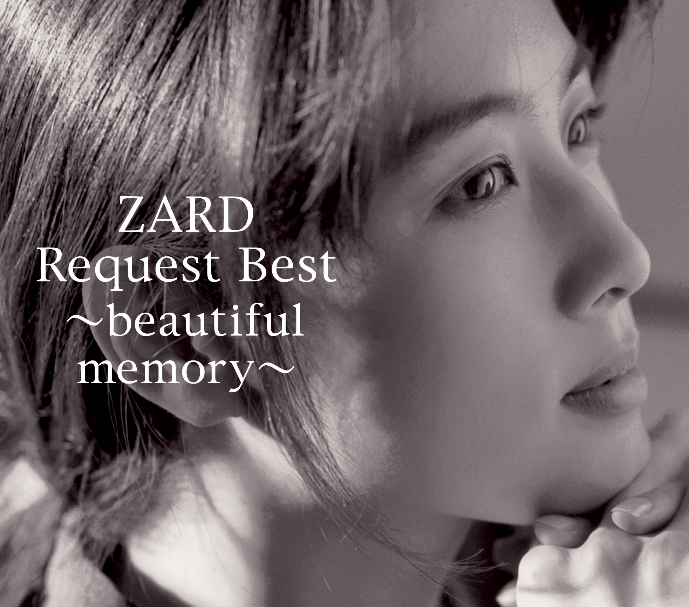 | |||||
| 2008.01.23 | |||||
| ZARD SINGLE COLLECTION ~20th ANNIVERSARY~ | ● Disc 0101. Good-bye My Loneliness(Lyrics: Izumi Sakai / Music: Tetsuro Oda / Arrangement: Masao Akashi) 02. Ai wa Kurayami no Naka de（愛は暗闇の中で）(Lyrics: Izumi Sakai / Music: Seiichiro Kuribayashi / Arrangement: ZARD, Hiroshi Terao) 03. Fushigi ne...（不思議ね…）(Lyrics: Izumi Sakai / Music: Tetsuro Oda / Arrangement: Masao Akashi) 04. Sunao ni Ienakute（素直に言えなくて）(Lyrics & Music: Izumi Sakai / Arrangement: Masao Akashi) 05. Mou Sagasanai（もう探さない）(Lyrics: Izumi Sakai / Music: Tetsuro Oda / Arrangement: Masao Akashi) 06. Konna ni Aishitemo（こんなに愛しても）(Lyrics: Izumi Sakai / Music: Seiichiro Kuribayashi / Arrangement: Masao Akashi) 07. Nemurenai Yoru wo Daite（眠れない夜を抱いて）(Lyrics: Izumi Sakai / Music: Tetsuro Oda / Arrangement: Masao Akashi, Daisuke Ikeda) 08. Dangerous Tonight(Lyrics: Izumi Sakai / Music: Seiichiro Kuribayashi / Arrangement: Masao Akashi) 09. IN MY ARMS TONIGHT(Lyrics: Izumi Sakai / Music: Michiya Haruhata / Arrangement: Masao Akashi) 10. Ase no Naka de CRY（汗の中でCRY）(Lyrics: Izumi Sakai / Music: Toshiya Matsukawa / Arrangement: Daisuke Ikeda, Masazumi Ozawa) 11. Makenaide（負けないで）(Lyrics: Izumi Sakai / Music: Tetsuro Oda / Arrangement: Takeshi Hayama) 12. Stray Love(Lyrics: Izumi Sakai / Music: Daria Kawashima / Arrangement: Masao Akashi) 13. Kimi ga Inai（君がいない）(Lyrics: Izumi Sakai / Music: Seiichiro Kuribayashi / Arrangement: Masao Akashi) 14. Watashi dake Mitsumete（私だけ見つめて）(Lyrics: Izumi Sakai / Music: Seiichiro Kuribayashi / Arrangement: Masao Akashi) 15. Yureru Omoi（揺れる想い）(Lyrics: Izumi Sakai / Music: Tetsuro Oda / Arrangement: Masao Akashi) 16. Just for you(Lyrics: Izumi Sakai / Music: Seiichiro Kuribayashi / Arrangement: Masao Akashi, Daisuke Ikeda) ● Disc 0201. Mou Sukoshi Ato Sukoshi...（もう少し あと少し…）(Lyrics: Izumi Sakai / Music: Seiichiro Kuribayashi / Arrangement: Masao Akashi) 02. Kanariya（カナリヤ）(Lyrics: Izumi Sakai / Music: Seiichiro Kuribayashi / Arrangement: Masao Akashi) 03. Kitto Wasurenai（きっと忘れない）(Lyrics: Izumi Sakai / Music: Tetsuro Oda / Arrangement: Masao Akashi) 04. Tasogare ni My Lonely Heart（黄昏にMy Lonely Heart）(Lyrics: Izumi Sakai / Music: Seiichiro Kuribayashi / Arrangement: Masao Akashi) 05. Kono Ai ni Oyogi Tsukarete mo（この愛に泳ぎ疲れても）(Lyrics: Izumi Sakai / Music: Tetsuro Oda / Arrangement: Masao Akashi) 06. Boy(Lyrics: Izumi Sakai / Music: Seiichiro Kuribayashi / Arrangement: Masao Akashi) 07. Konna ni Soba ni Iru no ni（こんなにそばに居るのに）(Lyrics: Izumi Sakai / Music: Seiichiro Kuribayashi / Arrangement: Masao Akashi) 08. Anata no Sei ja Nai（あなたのせいじゃない）(Lyrics: Izumi Sakai / Music: Seiichiro Kuribayashi / Arrangement: Masao Akashi) 09. Anata wo Kanjiteitai（あなたを感じていたい）(Lyrics: Izumi Sakai / Music & Arrangement: Tetsuro Oda) 10. Take me to your dream(Lyrics: Izumi Sakai / Music: Daria Kawashima / Arrangement: Masao Akashi) 11. Just believe in love(Lyrics: Izumi Sakai / Music: Michiya Haruhata / Arrangement: Takeshi Hayama) 12. Ready, Go!(Lyrics: Izumi Sakai / Music: Daria Kawashima / Arrangement: Takeshi Hayama) 13. Ai ga Mienai（愛が見えない）(Lyrics: Izumi Sakai / Music: Masazumi Ozawa / Arrangement: Takeshi Hayama) 14. Teenage dream(Lyrics: Izumi Sakai / Music: Seiichiro Kuribayashi / Arrangement: Masao Akashi) 15. Sayonara wa Ima mo Kono Mune ni Imasu（サヨナラは今もこの胸に居ます）(Lyrics: Izumi Sakai / Music: Seiichiro Kuribayashi / Arrangement: Takeshi Hayama) 16. Nemuri（眠り）(Lyrics & Music: Izumi Sakai / Arrangement: Daisuke Ikeda) ● Disc 0301. My Friend（マイ フレンド）(Lyrics: Izumi Sakai / Music: Tetsuro Oda / Arrangement: Takeshi Hayama) 02. Mezameta Asa wa...（目覚めた朝は…）(Lyrics: Izumi Sakai / Music: Mitsuyoshi Yonezawa / Arrangement: Daisuke Ikeda) 03. Kokoro wo Hiraite（心を開いて）(Lyrics: Izumi Sakai / Music: Tetsuro Oda / Arrangement: Daisuke Ikeda) 04. Change my mind(Lyrics: Izumi Sakai / Music: Seiichiro Kuribayashi / Arrangement: Takeshi Hayama) 05. Don't you see!(Lyrics: Izumi Sakai / Music: Seiichiro Kuribayashi / Arrangement: Takeshi Hayama) 06. Kaeranu Jikan no Naka de（帰らぬ時間の中で）(Lyrics: Izumi Sakai / Music & Arrangement: Akihito Tokunaga) 07. Kimi ni Aitaku Nattara...（君に逢いたくなったら…）(Lyrics: Izumi Sakai / Music: Tetsuro Oda / Arrangement: Takeshi Hayama) 08. Ai wo Shinjite Itai（愛を信じていたい）(Lyrics: Izumi Sakai / Music & Arrangement: Akihito Tokunaga) 09. Kaze ga Toori Nukeru Machi he（風が通り抜ける街へ）(Lyrics: Izumi Sakai / Music: Tetsuro Oda / Arrangement: Akihito Tokunaga) 10. Tooi Hoshi wo Kazoete（遠い星を数えて）(Lyrics: Izumi Sakai / Music: Seiichiro Kuribayashi / Arrangement: Akihito Tokunaga) 11. Eien（永遠）(Lyrics: Izumi Sakai / Music & Arrangement: Akihito Tokunaga) 12. I can't let go(Lyrics: Izumi Sakai / Music: Seiichiro Kuribayashi / Arrangement: Hirohito Furui) 13. My Baby Grand ~Nukumori ga Hoshikute~（My Baby Grand～ぬくもりが欲しくて～）(Lyrics: Izumi Sakai / Music: Tetsuro Oda / Arrangement: Daisuke Ikeda) 14. Love is Gone(Lyrics: Izumi Sakai / Music: Masaaki Watanuki / Arrangement: Daisuke Ikeda) 15. Iki mo Dekinai（息もできない）(Lyrics: Izumi Sakai / Music: Tetsuro Oda / Arrangement: Takeshi Hayama) 16. Vintage(Lyrics: Izumi Sakai / Music & Arrangement: Akihito Tokunaga) ● Disc 0401. Unmei no Roulette Mawashite（運命のルーレット廻して）(Lyrics: Izumi Sakai / Music: Seiichiro Kuribayashi / Arrangement: Daisuke Ikeda) 02. Shoujo no Koro ni Modotta Mitai ni（少女の頃に戻ったみたいに）(Lyrics: Izumi Sakai / Music: Aika Ohno / Arrangement: Daisuke Ikeda) 03. Atarashii Door ~Fuyu no Himawari~（新しいドア～冬のひまわり～）(Lyrics: Izumi Sakai / Music: Masato Kitano / Arrangement: Hirohito Furui) 04. GOOD DAY(Lyrics: Izumi Sakai / Music: Masaaki Watanuki / Arrangement: Daisuke Ikeda) 05. MIND GAMES(Lyrics: Izumi Sakai / Music: Masaaki Watanuki / Arrangement: Masaaki Watanuki, Hirohito Furui) 06. Hypnosis(Lyrics: Izumi Sakai / Music & Arrangement: Hitoshi Okamoto) 07. MIND GAMES (Redway Secret Mix)(Lyrics: Izumi Sakai / Music: Masaaki Watanuki / Arrangement: Masaaki Watanuki, Hirohito Furui) 08. Sekai wa Kitto Mirai no Naka（世界はきっと未来の中）(Lyrics: Izumi Sakai / Music: Yuichiro Iwai / Arrangement: Akihito Tokunaga, Hirohito Furui, Kenji Shiojiri) 09. Itai Kurai Kimi ga Afureteiru yo（痛いくらい君があふれているよ）(Lyrics: Izumi Sakai / Music & Arrangement: Kenji Shiojiri) 10. Itai Kurai Kimi ga Afureteiru yo (Re-Mix)（痛いくらい君があふれているよ (Re-Mix)）(Lyrics: Izumi Sakai / Music: Kenji Shiojiri / Remix: FAST ALVY and ME-YA) 11. Kono Namida Hoshi ni Nare（この涙 星になれ）(Lyrics: Izumi Sakai / Music: Yuichiro Iwai / Arrangement: Hirohito Furui) 12. O・mo・hi・de（お・も・ひ・で）(Lyrics: Izumi Sakai / Music: Hiroshi Terao / Arrangement: Hirohito Furui, Akihito Tokunaga) 13. Get U're Dream(Lyrics: Izumi Sakai / Music: Aika Ohno / Arrangement: Takeshi Hayama) 14. Get U're Dream (Version Two)(Lyrics: Izumi Sakai / Music: Aika Ohno / Arrangement: Akihito Tokunaga) 15. Get U're Dream (Version Three)(Lyrics: Izumi Sakai / Music: Aika Ohno / Arrangement: YOKO Black. Stone) ● Disc 0501. promised you(Lyrics: Izumi Sakai / Music: Seiichiro Kuribayashi / Arrangement: Cybersound) 02. The only truth I know is you(Lyrics: Izumi Sakai / Music & Arrangement: Akihito Tokunaga) 03. Sawayakana Kimi no Kimochi（さわやかな君の気持ち）(Lyrics: Izumi Sakai / Music & Arrangement: Akihito Tokunaga) 04. Dakishimete Ite（抱きしめていて）(Lyrics: Izumi Sakai / Music & Arrangement: Akihito Tokunaga) 05. Seven Rainbow(Lyrics: Izumi Sakai / Music & Arrangement: Akihito Tokunaga) 06. Ashita wo Yume Mite（明日を夢見て）(Lyrics: Izumi Sakai / Music: Aika Ohno / Arrangement: Satoru Kobayashi) 07. Sagashi ni Ikou yo（探しに行こうよ）(Lyrics: Izumi Sakai / Music & Arrangement: Akihito Tokunaga) 08. Hitomi Tojite（瞳閉じて）(Lyrics: Izumi Sakai / Music: Aika Ohno / Arrangement: Akihito Tokunaga) 09. Itoshii Hito yo ~Na mo Naki Tabibito yo~（愛しい人よ～名もなき旅人よ～）(Lyrics: Izumi Sakai / Music: Yuichiro Iwai / Arrangement: Yoshinobu Ohga) 10. Motto Chikaku de Kimi no Yokogao Mitetai（もっと近くで君の横顔見ていたい）(Lyrics: Izumi Sakai / Music: Aika Ohno / Arrangement: Daisuke Ikeda) 11. Reset（リセット）(Lyrics: Izumi Sakai / Music: Makoto Miyoshi / Arrangement: Satoru Kobayashi) 12. Kakegae no Nai Mono（かけがえのないもの）(Lyrics: Izumi Sakai / Music: Aika Ohno / Arrangement: Satoru Kobayashi) 13. Muga Muchuu（無我夢中）(Lyrics: Izumi Sakai / Music: Aika Ohno / Arrangement: night clubbers) 14. Eien (What a beautiful moment Tour Opening Ver.)（永遠 (What a beautiful moment Tour Opening Ver.)）(Music: Akihito Tokunaga / Arrangement: Daisuke Ikeda) ● Disc 0601. Kyou wa Yukkuri Hanasou（今日はゆっくり話そう）(Lyrics: Izumi Sakai / Music: Aika Ohno / Arrangement: Akihito Tokunaga) 02. Awai Yuki ga Tokete（淡い雪がとけて）(Lyrics: Izumi Sakai / Music: Hiroshi Terao / Arrangement: Akihito Tokunaga) 03. Ame ga Furidasu Mae ni（雨が降り出す前に）(Lyrics: Izumi Sakai / Music: Yuichiro Iwai / Arrangement: Takeshi Hayama) 04. Hoshi no Kagayaki yo（星のかがやきよ）(Lyrics: Izumi Sakai / Music: Aika Ohno / Arrangement: Takeshi Hayama) 05. Natsu wo Matsu Sail (Ho) no You ni（夏を待つセイル(帆)のように）(Lyrics: Izumi Sakai / Music: Aika Ohno / Arrangement: Takeshi Hayama) 06. Kanashii Hodo Anata ga Suki（悲しいほど貴方が好き）(Lyrics: Izumi Sakai / Music: Aika Ohno / Arrangement: Takeshi Hayama) 07. Karatto Ikou!（カラッといこう!）(Lyrics: Izumi Sakai / Music: Aika Ohno / Arrangement: Takeshi Hayama) 08. Heart ni Hi wo Tsukete（ハートに火をつけて）(Lyrics: Izumi Sakai / Music: Aika Ohno / Arrangement: Takeshi Hayama) 09. Kimi e no Blues（君へのブルース）(Lyrics & Music: Izumi Sakai / Arrangement: Takeshi Hayama) 10. Glorious Mind（グロリアス マインド）(Lyrics: Izumi Sakai / Music: Aika Ohno / Arrangement: Takeshi Hayama) 11. Sagashi ni Ikou yo (2007 version)（探しに行こうよ (2007 version)）(Lyrics: Izumi Sakai / Music: Akihito Tokunaga / Arrangement: Takeshi Hayama) 12. Ai wo Shinjite Itai (2007 version)（愛を信じていたい (2007 version)）(Lyrics: Izumi Sakai / Music: Akihito Tokunaga / Arrangement: Takeshi Hayama) 13. Tsubasa wo Hirogete（翼を広げて）(Lyrics: Izumi Sakai / Music: Tetsuro Oda / Arrangement: Masao Akashi) 14. Ai wa Kurayami no Naka de featuring Aya Kamiki（愛は暗闇の中で featuring Aya Kamiki）(Lyrics: Izumi Sakai / Music: Seiichiro Kuribayashi / Arrangement: Siyon Morishita) 15. Sunao ni Ienakute ~featuring Mai Kuraki~（素直に言えなくて ～featuring Mai Kuraki～）(Lyrics & Music: Izumi Sakai / Arrangement: Hitoshi Okamoto) 16. Hypnosis(Lyrics: Izumi Sakai / Music & Arrangement: Hitoshi Okamoto) ● Disc 0701. Hateshinai Yume wo（果てしない夢を）(Lyrics: Show Wesugi, Izumi Sakai / Music: Masayuki Deguchi / Arrangement: Masao Akashi) 02. Ame ni Nurete（雨に濡れて）(Lyrics: Izumi Sakai, Show Wesugi / Music: Seiichiro Kuribayashi / Arrangement: Masao Akashi) 03. Christmas Time（クリスマス タイム）(Performer: Barbier / Guest Vocal: Izumi Sakai / Lyrics: Izumi Sakai / Music: Seiichiro Kuribayashi / Arrangement: Taka Umeno, Robbie Kondor) 04. Anata ni Kaeritai（あなたに帰りたい）(Performer: Barbier / Guest Vocal: Izumi Sakai / Lyrics: Izumi Sakai / Music: Seiichiro Kuribayashi / Arrangement: Takeshi Hayama) 05. LOVE ~Nemurezu ni Kimi no Yokogao Zutto Miteitai~（LOVE ～眠れずに君の横顔ずっと見ていた～）(Performer: Barbier / Guest Vocal: Izumi Sakai / Lyrics: Izumi Sakai / Music: Seiichiro Kuribayashi / Arrangement: Takeshi Hayama) 06. I still remember(Performer: Barbier / Guest Vocal: Izumi Sakai / Lyrics: Izumi Sakai / Music: Seiichiro Kuribayashi / Arrangement: Takeshi Hayama) 07. Ihoujin（異邦人）(Performer: TAK MATSUMOTO featuring ZARD / Lyrics & Music: Saki Kubota / Arrangement: Tak Matsumoto, Akihito Tokunaga) | 7CD B-Gram Records – JBCD-2011 (6CD+Bonus Disc / Digital Remaster) 2011.02.10 |
Fuji TV Network drama “Kekkon no Risou to Genjitsu”（結婚の理想と現実）Theme Song (Disc 1 / #1) Clarion（クラリオン）Karaoke CF Song (Disc 1 / #1) Nippon TV Network quiz show “Magical Zunou Power!!”（マジカル頭脳パワー!!）Theme Song (Disc 1 / #3) TV Asahi Network drama “Shichinin no Onna Bengoshi II”（七人の女弁護士II）Theme Song (Disc 1 / #5) TV Asahi Network wide show “Tonight”（トゥナイト）Ending Theme (Disc 1 / #7) TV Asahi Network drama “Love Story wo Kimi ni '92 〜Nemurenai Yoru wo Daite〜”（ラブストーリーを君に'92〜眠れない夜を抱いて〜）Theme Song (Disc 1 / #7) TBS TV Network drama “Gakkou ga Abunai”（学校があぶない）Ending Theme (Disc 1 / #9) Fuji TV Network drama “Bokutachi no Drama Series”（ボクたちのドラマシリーズ）“Shiratori Reiko de Gozaimasu! Season 1”（白鳥麗子でございます! 第1シリーズ）Ending Theme (Disc 1 / #11) TV Saitama “Sydney 2000 Olympic Asian Qualifiers Send-Off Match”（シドニーオリンピック2000アジア地区予選 壮行試合）Theme Song (Disc 1 / #11) Nippon TV Network “13th All Japan High School Quiz Championship”（第13回全国高等学校クイズ選手権）Ending Theme (Disc 1 / #11) NTT DoCoMo Vancouver Olympics-related “Ou'en in Vancouver-hen”（応援 in バンクーバー篇）CM Song from February 10, 2010 (Disc 1 / #11) Yomiuri TV/Nippon TV Network drama “Kanojo no Kirai na Kanojo”（彼女の嫌いな彼女）Theme Song (Disc 1 / #13) Otsuka Pharmaceutical “Pocari Sweat” CM Song (Disc 1 / #15) Chiba TV Network music program' “MU-GEN〜Music Generations〜” October 2006 Opening Theme (Disc 1 / #15) Spotify (@SpotifyJP) “Anata no Hibi ni Ongaku wo: Jikka no Katazuke-hen 30-byou”（「あなたの日々に音楽を」実家の片付け篇 30秒）TV CM Song (Disc 1 / #15) TV Asahi Network drama “Lullaby Keiji '93”（ララバイ刑事'93）Ending Theme (Disc 2 / #1) Fuji TV Network drama “Bokutachi no Drama Series”（ボクたちのドラマシリーズ）“Shiratori Reiko de Gozaimasu! Season 2”（白鳥麗子でございます! 第2シリーズ）Ending Theme (Disc 2 / #3) Kansai TV/Fuji TV Network drama “Ai to Giwaku no Suspense”（愛と疑惑のサスペンス）Opening Theme (Disc 2 / #5) Yomiuri TV-produced film “Natsu no Niwa 〜The Friends〜”（夏の庭〜The Friends〜）Ending Theme (Disc 2 / #6) Boutique JOY（ブティックJOY）TV-CF Image Song (Disc 2 / #7) NTT DoCoMo pager “Palfy V”（パルフィー V）CM Song (Disc 2 / #9) TBS TV Network drama “Yureru Omoi”（揺れる想い）Theme Song (Disc 2 / #11) Bristol-Myers Squibb “SEA BREEZE '95” CM Song (Disc 2 / #13) Toei “Bokutachi no Eiga Series”（ぼくたちの映画シリーズ）film “Shiratori Reiko de Gozaimasu!”（白鳥麗子でございます!）Theme Song (Disc 2 / #15) Nationwide 28-Station Network program “J-ROCK ARTIST Count Down 50” Ending Theme (Disc 2 / #15) TV Asahi Network anime “SLAM DUNK”（スラムダンク）4th Ending Theme (Disc 3 / #1) Otsuka Pharmaceutical “Pocari Sweat” CM Song (Disc 3 / #3) Mitsubishi Motors Corporation ⑭ CM Song (Disc 3 / #3) Fuji TV Network anime “Dragon Ball GT”（ドラゴンボールGT）2nd Ending Theme (Disc 3 / #5) Nippon TV Network “Imahito”（いまひと）Theme Song (Disc 3 / #6) TBS TV Network drama “Risou no Kekkon”（理想の結婚）Opening Theme (Disc 3 / #7) Japan Racing Association “'97 Summer JRA” Campaign Song (Disc 3 / #9) Yomiuri TV/Nippon TV Network drama “Shitsurakuen”（失楽園）Theme Song (Disc 3 / #11) Canon “NEW EOS Kiss” CM Song (Disc 3 / #11) NTT DoCoMo “DoCoMo '97 Winter”（ドコモ ’97-冬）CM Song (Disc 3 / #13) Yomiuri TV/Nippon TV Network drama “Shitsurakuen: Tokubetsu-hen”（失楽園・特別編）Theme Song (Disc 3 / #14) Fuji TV Network anime “Chuuka Ichiban!”（中華一番!）2nd Opening Theme (Disc 3 / #15) Yomiuri TV/Nippon TV Network anime “Meitantei Conan”（名探偵コナン）Opening Theme (Disc 4 / #1) Nationwide Toho Youga-kei Roadshow “Meitantei Conan Movie 02: 14-banme no Target”（名探偵コナン １４番目の標的）Theme Song (Disc 4 / #2) Sapporo Breweries “Fuyu Monogatari”（冬物語）CM Song (Disc 4 / #3) Beautylabo “Natural Color”（ナチュラルカラー）CM Song (Disc 4 / #4) Fuji TV Network sports program “Pro Yakyuu News”（プロ野球ニュース）Image Song (Disc 4 / #5) Nippon Broadcasting System radio program “Show Up Nighter '99”（ショウアップナイター'99）Ending Theme (Disc 4 / #5) TV Asahi Network drama “Maiko-san wa Meitantei!”（舞妓さんは名探偵!）Theme Song (Disc 4 / #8) Nestlé Japan “NESCAFÉ moment”（ネスカフェモーメント）CM Song (Disc 4 / #9) TV Asahi Network drama “Kasouken no Onna”（科捜研の女）Theme Song (Disc 4 / #11) TV Asahi Network information program “Zeitaku na Kyuujitsu”（贅沢な休日）Theme Song (Disc 4 / #12) “Change IZU 2000!”（チェンジ伊豆2000!）Image Song (Disc 4 / #12) NHK Sydney Olympics Broadcast Theme Song (Disc 4 / #13) TV Asahi Network two-hour drama program “Doyou Wide Gekijou”（土曜ワイド劇場）Ending Theme (Disc 5 / #1) Nivea-Kao “8×4 (Eight Four)” CM Song (Disc 5 / #3) Konami PlayStation 2 game “Tokimeki Memorial 3 〜Yakusoku no Ano Basho de〜”（ときめきメモリアル3 ～約束のあの場所で～）Bitter Ending Theme (Disc 5 / #4) Konami game “Tokimeki Memorial 3 ~Yakusoku no Ano Basho de~”（ときめきメモリアル3 〜約束のあの場所で〜）Bitter Ending Theme (Disc 5 / #4) Konami PlayStation 2 game “Tokimeki Memorial 3 〜Yakusoku no Ano Basho de〜”（ときめきメモリアル3 ～約束のあの場所で～）Opening Theme (Disc 5 / #5) Konami game “Tokimeki Memorial 3 ~Yakusoku no Ano Basho de~”（ときめきメモリアル3 〜約束のあの場所で〜）Opening Theme (Disc 5 / #5) Yomiuri TV/Nippon TV Network anime “Meitantei Conan”（名探偵コナン）Ending Theme (Disc 5 / #6) Fuji TV Network sports program “Kandou Factory Suporuto!”（感動ファクトリー すぽると!）Image Song (Disc 5 / #8) Gekkeikan “Tsuki”（月）CM Song (Disc 5 / #10) TBS TV Network dating variety show “Koisuru Hanikami!”（恋するハニカミ!）Theme Song (Disc 5 / #12) Gekkeikan “Tsuki”（月）CM Song (Disc 6 / #1) Yomiuri TV/Nippon TV Network anime “Meitantei Conan”（名探偵コナン）Opening Theme (Disc 6 / #4) Nationwide Toho Youga-kei Roadshow “Meitantei Conan Movie 09: Suihei Senjou no Strategy”（名探偵コナン 水平線上の陰謀）Theme Song (Disc 6 / #5) Yomiuri TV/Nippon TV Network anime “Meitantei Conan”（名探偵コナン）Ending Theme (Disc 6 / #6) Fuji TV Network morning information program “Mezamashi Doyoubi”（めざましどようび）January–March 2006 Theme Song (Disc 6 / #7) TBS TV Network “Ai no Gekijou”（愛の劇場）drama “Suteki ni Common!”（すてきにコモン!）Theme Song (Disc 6 / #8) Yomiuri TV/Nippon TV Network anime “Meitantei Conan”（名探偵コナン）Opening Theme (Disc 6 / #10) TV Asahi Network news program “Super J Channel”（スーパーJチャンネル）Ending Theme for the December 14, 2007 Broadcast (Disc 6 / #10) Chiba TV Network music information program “MU-GEN〜Music Generations〜” December 2007 Opening Theme (Disc 6 / #10) Nationwide Toho Youga-kei Roadshow “Meitantei Conan Movie 12: Senritsu no Full Score”（名探偵コナン 戦慄の楽譜）Theme Song (Disc 6 / #13) Yomiuri TV/Nippon TV Network anime “Meitantei Conan”（名探偵コナン）Opening Theme (Disc 6 / #14) Nippon TV professional baseball broadcast image song (Disc 7 / #1) Independent TV Network music program “J-ROCK ARTIST COUNT DOWN 50” Ending Theme (Disc 7 / #3) TV drama “Seiya no Kiseki” episode 1 “Eve Nante Iranai”（聖夜の奇跡 第1話「イヴなんていらない」）Insert Song (Disc 7 / #3) Independent TV Network music program “J-ROCK ARTIST COUNT DOWN 50” Ending Theme (Disc 7 / #5) Fuji TV drama “Anata no Tonari ni Dareka Iru”（あなたの隣に誰かいる）Episode 4 Insert Song (Disc 7 / #7) |
Wiki PV/CM |
|
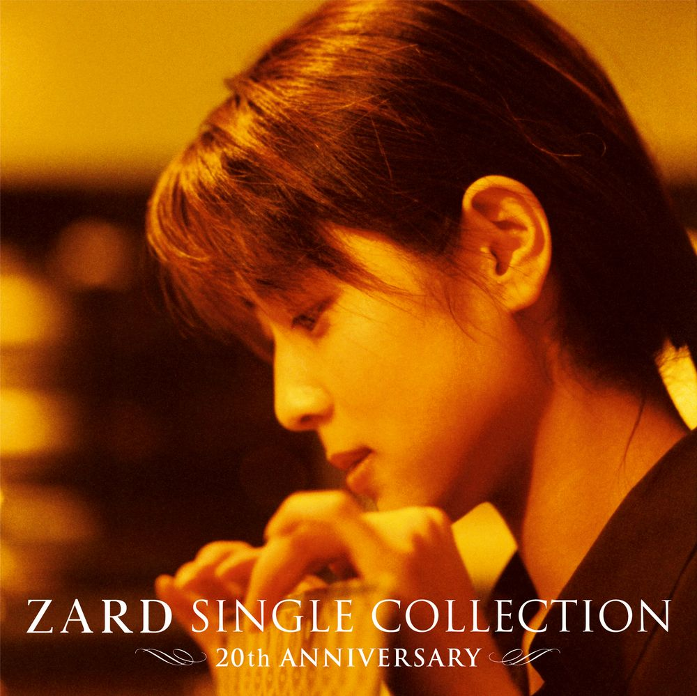 | |||||
| 2011.02.10 | |||||
| ZARD ALBUM COLLECTION ~20th ANNIVERSARY~ | ● Disc 0101. Good-bye My Loneliness(Lyrics: Izumi Sakai / Music: Tetsuro Oda / Arrangement: Masao Akashi) 02. Ai wa Kurayami no Naka de（愛は暗闇の中で）(Lyrics: Izumi Sakai / Music: Seiichiro Kuribayashi / Arrangement: ZARD, Hiroshi Terao) 03. Koi Onna no Yuuutsu（恋女の憂鬱）(Lyrics & Music: Daria Kawashima / Arrangement: Masao Akashi) 04. Oh! Sugar Baby(Lyrics: Izumi Sakai / Music: Seiichiro Kuribayashi / Arrangement: Takeshi Hayama) 05. Onna de Itai（女でいたい）(Lyrics & Music: Daria Kawashima / Arrangement: Takeshi Hayama) 06. It's a Boy(Lyrics: Izumi Sakai / Music: Seiichiro Kuribayashi / Arrangement: Masao Akashi) ● Disc 0201. Fushigi ne...（不思議ね…）(Lyrics: Izumi Sakai / Music: Tetsuro Oda / Arrangement: Masao Akashi) 02. Mou Sagasanai（もう探さない）(Lyrics: Izumi Sakai / Music: Tetsuro Oda / Arrangement: Masao Akashi) 03. Sunao ni Ienakute（素直に言えなくて）(Lyrics & Music: Izumi Sakai / Arrangement: Masao Akashi) 04. Hitori ga Suki（ひとりが好き）(Lyrics: Izumi Sakai / Music: Seiichiro Kuribayashi / Arrangement: Masao Akashi) 05. Forever(Lyrics: Izumi Sakai / Music: Daria Kawashima / Arrangement: Masao Akashi) 06. Lonely Soldier Boy(Lyrics: Izumi Sakai / Music: Seiichiro Kuribayashi / Arrangement: Masao Akashi) 07. Itsuka wa...（いつかは…）(Lyrics & Music: Izumi Sakai / Arrangement: Masao Akashi) ● Disc 0301. Nemurenai Yoru wo Daite（眠れない夜を抱いて）(Lyrics: Izumi Sakai / Music: Tetsuro Oda / Arrangement: Masao Akashi, Daisuke Ikeda) 02. Dareka ga Matteru（誰かが待ってる）(Lyrics: Izumi Sakai / Music: Seiichiro Kuribayashi / Arrangement: Masao Akashi) 03. Sayonara Ienakute（サヨナラ言えなくて）(Lyrics: Izumi Sakai / Music: Seiichiro Kuribayashi / Arrangement: Daisuke Ikeda) 04. Ano Hohoemi wo Wasurenaide（あの微笑みを忘れないで）(Lyrics: Izumi Sakai / Music: Daria Kawashima / Arrangement: Masao Akashi) 05. Suki na You ni Odoritai no（好きなように踊りたいの）(Lyrics: Izumi Sakai / Music: Kazuya Izumi / Arrangement: Takeshi Hayama) 06. Dangerous Tonight(Lyrics: Izumi Sakai / Music: Seiichiro Kuribayashi / Arrangement: Masao Akashi) 07. Konna ni Aishitemo（こんなに愛しても）(Lyrics: Izumi Sakai / Music: Seiichiro Kuribayashi / Arrangement: Masao Akashi) 08. Why Don't You Leave Me Alone(Lyrics: Izumi Sakai / Music: Daria Kawashima / Arrangement: Takeshi Hayama) 09. Ai wa Nemutteru（愛は眠ってる）(Lyrics: Izumi Sakai / Music: Daria Kawashima / Arrangement: Daisuke Ikeda) 10. Tooi Hi no Nostalgia（遠い日のNostalgia）(Lyrics: Izumi Sakai / Music: Eisuke Mochizuki / Arrangement: Masao Akashi) 11. So Together(Lyrics: Izumi Sakai / Music: Daria Kawashima / Arrangement: Masao Akashi) ● Disc 0401. Yureru Omoi（揺れる想い）(Lyrics: Izumi Sakai / Music: Tetsuro Oda / Arrangement: Masao Akashi) 02. Season(Lyrics: Izumi Sakai / Music: Seiichiro Kuribayashi / Arrangement: Takeshi Hayama) 03. Kimi ga Inai (B-version)（君がいない (B-version)）(Lyrics: Izumi Sakai / Music: Seiichiro Kuribayashi / Arrangement: Masao Akashi) 04. IN MY ARMS TONIGHT(Lyrics: Izumi Sakai / Music: Michiya Haruhata / Arrangement: Masao Akashi) 05. Anata wo Suki dakedo（あなたを好きだけど）(Lyrics: Izumi Sakai / Music: Seiichiro Kuribayashi / Arrangement: Masao Akashi) 06. Makenaide（負けないで）(Lyrics: Izumi Sakai / Music: Tetsuro Oda / Arrangement: Takeshi Hayama) 07. Listen to me(Lyrics: Izumi Sakai / Music: Daria Kawashima / Arrangement: Masao Akashi) 08. You and me (and…)(Lyrics: Izumi Sakai / Music: Tetsuro Oda / Arrangement: Takeshi Hayama) 09. I want you(Lyrics: Izumi Sakai / Music: Seiichiro Kuribayashi / Arrangement: Masao Akashi) 10. Futari no Natsu（二人の夏）(Lyrics: Izumi Sakai / Music: Seiichiro Kuribayashi / Arrangement: Masao Akashi) ● Disc 0501. Oh my love(Lyrics: Izumi Sakai / Music: Tetsuro Oda / Arrangement: Masao Akashi) 02. Top Secret(Lyrics: Izumi Sakai / Music: Seiichiro Kuribayashi / Arrangement: Masao Akashi) 03. Kitto Wasurenai（きっと忘れない）(Lyrics: Izumi Sakai / Music: Tetsuro Oda / Arrangement: Masao Akashi) 04. Mou Sukoshi Ato Sukoshi...（もう少し あと少し…）(Lyrics: Izumi Sakai / Music: Seiichiro Kuribayashi / Arrangement: Masao Akashi) 05. Ame ni Nurete（雨に濡れて）(Lyrics: Izumi Sakai, Show Wesugi / Music: Seiichiro Kuribayashi / Arrangement: Masao Akashi) 06. Kono Ai ni Oyogi Tsukarete mo（この愛に泳ぎ疲れても）(Lyrics: Izumi Sakai / Music: Tetsuro Oda / Arrangement: Masao Akashi) 07. I still remember(Lyrics: Izumi Sakai / Music: Seiichiro Kuribayashi / Arrangement: Masao Akashi) 08. If you gimme smile(Lyrics: Izumi Sakai / Music: Seiichiro Kuribayashi / Arrangement: Masao Akashi) 09. Rainen no Natsu mo（来年の夏も）(Lyrics: Izumi Sakai / Music: Seiichiro Kuribayashi / Arrangement: Masao Akashi) 10. Anata ni Kaeritai（あなたに帰りたい）(Lyrics: Izumi Sakai / Music: Seiichiro Kuribayashi / Arrangement: Masao Akashi) ● Disc 0601. Ima Sugu Ai ni Kite（今すぐ会いに来て）(Lyrics: Izumi Sakai / Music: Seiichiro Kuribayashi / Arrangement: Masao Akashi) 02. High Heel Nugi Sutete（ハイヒール脱ぎ捨てて）(Lyrics: Izumi Sakai / Music: Seiichiro Kuribayashi / Arrangement: Masao Akashi) 03. Forever you(Lyrics: Izumi Sakai / Music: Tetsuro Oda / Arrangement: Masao Akashi) 04. Mou Nigetari Shinai wa Omoide kara（もう逃げたりしないわ 想い出から）(Lyrics: Izumi Sakai / Music: Seiichiro Kuribayashi / Arrangement: Masao Akashi) 05. Anata wo Kanjiteitai（あなたを感じていたい）(Lyrics: Izumi Sakai / Music & Arrangement: Tetsuro Oda) 06. Kiraku ni Ikou（気楽に行こう）(Lyrics: Izumi Sakai / Music: Seiichiro Kuribayashi / Arrangement: Daisuke Ikeda) 07. I'm in love(Lyrics: Izumi Sakai / Music: Tetsuro Oda / Arrangement: Daisuke Ikeda) 08. Konna ni Soba ni Iru no ni（こんなにそばに居るのに）(Lyrics: Izumi Sakai / Music: Seiichiro Kuribayashi / Arrangement: Masao Akashi, Daisuke Ikeda) 09. Just believe in love(Lyrics: Izumi Sakai / Music: Michiya Haruhata / Arrangement: Takeshi Hayama) 10. Hitomi Sorasanaide（瞳そらさないで）(Lyrics: Izumi Sakai / Music: Tetsuro Oda / Arrangement: Masao Akashi) ● Disc 0701. My Friend（マイ フレンド）(Lyrics: Izumi Sakai / Music: Tetsuro Oda / Arrangement: Takeshi Hayama) 02. Kimi ga Ita kara（君がいたから）(Lyrics: Izumi Sakai / Music: Tetsuro Oda / Arrangement: Takeshi Hayama) 03. Sayonara wa Ima mo Kono Mune ni Imasu（サヨナラは今もこの胸に居ます）(Lyrics: Izumi Sakai / Music: Seiichiro Kuribayashi / Arrangement: Takeshi Hayama) 04. LOVE ~Nemurezu ni Kimi no Yokogao Zutto Miteitai~（LOVE ～眠れずに君の横顔ずっと見ていた～）(Lyrics: Izumi Sakai / Music: Seiichiro Kuribayashi / Arrangement: Masao Akashi) 05. DAN DAN Kokoro Hikareteku（DAN DAN 心魅かれてく）(Lyrics: Izumi Sakai / Music: Tetsuro Oda / Arrangement: Daisuke Ikeda) 06. Nemuri（眠り）(Lyrics & Music: Izumi Sakai / Arrangement: Daisuke Ikeda) 07. Kokoro wo Hiraite（心を開いて）(Lyrics: Izumi Sakai / Music: Tetsuro Oda / Arrangement: Daisuke Ikeda) 08. Totsuzen（突然）(Lyrics: Izumi Sakai / Music: Tetsuro Oda / Arrangement: Takeshi Hayama) 09. Kyou mo（今日も）(Lyrics: Izumi Sakai / Music: Tetsuro Oda / Arrangement: Takeshi Hayama) 10. Today is another day(Lyrics: Izumi Sakai / Music: Tetsuro Oda / Arrangement: Daisuke Ikeda) 11. Ai ga Mienai（愛が見えない）(Lyrics: Izumi Sakai / Music: Masazumi Ozawa / Arrangement: Takeshi Hayama) 12. Mitsumete Itai ne（見つめていたいね）(Lyrics: Izumi Sakai / Music: Seiichiro Kuribayashi / Arrangement: Masao Akashi) ● Disc 0801. Eien（永遠）(Lyrics: Izumi Sakai / Music & Arrangement: Akihito Tokunaga) 02. My Baby Grand ~Nukumori ga Hoshikute~（My Baby Grand～ぬくもりが欲しくて～）(Lyrics: Izumi Sakai / Music: Tetsuro Oda / Arrangement: Daisuke Ikeda) 03. WAKE UP MAKE THE MORNING LAST ~Wasuregataki Hito e~（WAKE UP MAKE THE MORNING LAST～忘れがたき人へ～）(Lyrics: Izumi Sakai / Music: Hiroya Fukuyama / Arrangement: Hirohito Furui) 04. Brand New Love(Lyrics: Izumi Sakai / Music: Masaaki Watanuki / Arrangement: Akihito Tokunaga) 05. Unmei no Roulette Mawashite（運命のルーレット廻して）(Lyrics: Izumi Sakai / Music: Seiichiro Kuribayashi / Arrangement: Daisuke Ikeda) 06. Tooi Hoshi wo Kazoete（遠い星を数えて）(Lyrics: Izumi Sakai / Music: Seiichiro Kuribayashi / Arrangement: Akihito Tokunaga) 07. Atarashii Door ~Fuyu no Himawari~（新しいドア～冬のひまわり～）(Lyrics: Izumi Sakai / Music: Masato Kitano / Arrangement: Hirohito Furui) 08. GOOD DAY(Lyrics: Izumi Sakai / Music: Masaaki Watanuki / Arrangement: Daisuke Ikeda) 09. I feel fine, yeah(Lyrics: Izumi Sakai / Music: Makoto Miyoshi / Arrangement: Hirohito Furui) 10. Shoujo no Koro ni Modotta Mitai ni（少女の頃に戻ったみたいに）(Lyrics: Izumi Sakai / Music: Aika Ohno / Arrangement: Daisuke Ikeda) 11. Iki mo Dekinai（息もできない）(Lyrics: Izumi Sakai / Music: Tetsuro Oda / Arrangement: Takeshi Hayama) 12. Kaze ga Toori Nukeru Machi he（風が通り抜ける街へ）(Lyrics: Izumi Sakai / Music: Tetsuro Oda / Arrangement: Akihito Tokunaga) 13. Photograph（フォトグラフ）(Lyrics: Izumi Sakai / Music & Arrangement: Akihito Tokunaga) ● Disc 0901. Get U're Dream(Lyrics: Izumi Sakai / Music: Aika Ohno / Arrangement: Takeshi Hayama) 02. Kono Namida Hoshi ni Nare（この涙 星になれ）(Lyrics: Izumi Sakai / Music: Yuichiro Iwai / Arrangement: Hirohito Furui) 03. promised you ~with P-edition~(Lyrics: Izumi Sakai / Music: Seiichiro Kuribayashi / Arrangement: Cybersound) 04. Itai Kurai Kimi ga Afureteiru yo（痛いくらい君があふれているよ）(Lyrics: Izumi Sakai / Music & Arrangement: Kenji Shiojiri) 05. Mado no Soto wa Monochrome（窓の外はモノクローム）(Lyrics: Izumi Sakai / Music: Yuichiro Iwai / Arrangement: Yoshinobu Ohga) 06. O・mo・hi・de（お・も・ひ・で）(Lyrics: Izumi Sakai / Music: Hiroshi Terao / Arrangement: Hirohito Furui, Akihito Tokunaga) 07. Ashita Moshi Kimi ga Kowaretemo（明日もし君が壊れても）(Lyrics: Izumi Sakai / Music: Aika Ohno / Arrangement: Akihito Tokunaga) 08. Sekai wa Kitto Mirai no Naka ~another style 21~（世界はきっと未来の中～another style 21～）(Lyrics: Izumi Sakai / Music: Yuichiro Iwai / Arrangement: Akihito Tokunaga, Yoshinobu Ohga) 09. hero(Lyrics: Izumi Sakai / Music: Aika Ohno / Arrangement: Yoshinobu Ohga) 10. Yureru Omoi (Gomi's New York Remix)（揺れる想い (Gomi's New York Remix)）(Lyrics: Izumi Sakai / Music: Tetsuro Oda / Remix: Gomi) 11. Makenaide (Gomi's 10th Anniversary Special Mix)（負けないで (Gomi's 10th Anniversary Special Mix)）(Lyrics: Izumi Sakai / Music: Tetsuro Oda / Remix: Gomi) 12. Toki no Tsubasa（時間（とき）の翼）(Lyrics: Izumi Sakai / Music: Aika Ohno / Arrangement: Akihito Tokunaga) ● Disc 1001. Ashita wo Yume Mite（明日を夢見て）(Lyrics: Izumi Sakai / Music: Aika Ohno / Arrangement: Satoru Kobayashi) 02. Toki no Tsubasa（時間（とき）の翼）(Lyrics: Izumi Sakai / Music: Aika Ohno / Arrangement: Satoru Kobayashi) 03. Motto Chikaku de Kimi no Yokogao Mitetai（もっと近くで君の横顔見ていたい）(Lyrics: Izumi Sakai / Music: Aika Ohno / Arrangement: Daisuke Ikeda) 04. pray(Lyrics: Izumi Sakai / Music: Akihito Tokunaga / Arrangement: Satoru Kobayashi) 05. Deai Soshite Wakare（出逢いそして別れ）(Lyrics: Izumi Sakai / Music: Michiya Haruhata / Arrangement: Michiya Haruhata, Daisuke Ikeda) 06. Tomatteita Tokei ga Ima Ugokidashita（止まっていた時計が今動き出した）(Lyrics: Izumi Sakai / Music: Yuri Nakamura / Arrangement: Akihito Tokunaga) 07. Hitomi Tojite（瞳閉じて）(Lyrics: Izumi Sakai / Music: Aika Ohno / Arrangement: Akihito Tokunaga) 08. Sawayakana Kimi no Kimochi (Album Ver.)（さわやかな君の気持ち (Album Ver.)）(Lyrics: Izumi Sakai / Music: Akihito Tokunaga / Arrangement: Dr.Terachi, Pierrot Le Fou) 09. Ai de Anata wo Sukuimashou（愛であなたを救いましょう）(Lyrics: Izumi Sakai / Music: Seiichiro Kuribayashi / Arrangement: Masao Akashi) 10. Tenshi no You na Egao de（天使のような笑顔で）(Lyrics: Izumi Sakai / Music: Aika Ohno / Arrangement: Akihito Tokunaga) 11. Kanashii Hodo Kyou wa Ame demo（悲しいほど 今日は雨でも）(Lyrics: Izumi Sakai / Music: Aika Ohno / Arrangement: Satoru Kobayashi) ● Disc 1101. Natsu wo Matsu Sail (Ho) no You ni（夏を待つセイル(帆)のように）(Lyrics: Izumi Sakai / Music: Aika Ohno / Arrangement: Takeshi Hayama) 02. Sayonara made no Distance（サヨナラまでのディスタンス）(Lyrics: Izumi Sakai / Music: Aika Ohno / Arrangement: Takeshi Hayama) 03. Kakegae no Nai Mono（かけがえのないもの）(Lyrics: Izumi Sakai / Music: Aika Ohno / Arrangement: Satoru Kobayashi) 04. Kyou wa Yukkuri Hanasou（今日はゆっくり話そう）(Lyrics: Izumi Sakai / Music: Aika Ohno / Arrangement: Akihito Tokunaga) 05. Kimi to no Fureai（君とのふれあい）(Lyrics: Izumi Sakai / Music: Aika Ohno / Arrangement: Takeshi Hayama) 06. Separate Ways（セパレート・ウェイズ）(Lyrics: Izumi Sakai / Music: Aika Ohno / Arrangement: Hirohito Furui) 07. Last Good-bye(Lyrics: Izumi Sakai / Music: Yoshio Tatano / Arrangement: Takeshi Hayama) 08. Hoshi no Kagayaki yo（星のかがやきよ）(Lyrics: Izumi Sakai / Music: Aika Ohno / Arrangement: Takeshi Hayama) 09. Tsuki ni Negai wo（月に願いを）(Lyrics: Izumi Sakai / Music: Aika Ohno / Arrangement: Satoru Kobayashi) 10. Anata to Tomo ni Ikite Yuku（あなたと共に生きてゆく）(Lyrics: Izumi Sakai / Music: Tetsuro Oda / Arrangement: Satoru Kobayashi) 11. I can't tell(Lyrics: Izumi Sakai / Music: Seiichiro Kuribayashi / Arrangement: Takeshi Hayama) 12. good-night sweet heart(Lyrics: Izumi Sakai / Music: Akihito Tokunaga / Arrangement: Takeshi Hayama) 13. Kimi to Kyou no Koto wo Isshou Wasurenai（君と今日の事を一生忘れない）(Lyrics: Izumi Sakai / Music & Arrangement: Akihito Tokunaga) ● Disc 1201. Ano Hohoemi wo Wasurenaide (2012 Movie-theme ver.)（あの微笑みを忘れないで (2012 Movie-theme ver.)）(Lyrics: Izumi Sakai / Music: Daria Kawashima / Arrangement: Takeshi Hayama) 02. Don't you see! (TV on-air ver.)(Lyrics: Izumi Sakai / Music: Seiichiro Kuribayashi / TV Version Arrangement: Uncredited) 03. Eien (English ver. on 1chorus)（永遠 (English ver. on 1chorus)）(Lyrics: Izumi Sakai / Music: Akihito Tokunaga / Version Arrangement: Uncredited) 04. Unmei no Roulette Mawashite (TV on-air ver.)（運命のルーレット廻して (TV on-air ver.)）(Lyrics: Izumi Sakai / Music: Seiichiro Kuribayashi / TV Version Arrangement: Uncredited) 05. Sawayakana Kimi no Kimochi (CM on-air ver.)（さわやかな君の気持ち (CM on-air ver.)）(Lyrics: Izumi Sakai / Music: Akihito Tokunaga / CM Version Arrangement: Uncredited) 06. Ashita wo Yume Mite (TV on-air ver.)（明日を夢見て (TV on-air ver.)）(Lyrics: Izumi Sakai / Music: Aika Ohno / TV Version Arrangement: Uncredited) 07. Natsu wo Matsu Sail (Ho) no You ni (Theater-CM ver.)（夏を待つセイル(帆)のように (Theater-CM ver.)）(Lyrics: Izumi Sakai / Music: Aika Ohno / Theater-CM Arrangement: Uncredited) 08. Tooi Hi no Nostalgia (Acoustic Arrange ver.)（遠い日のNostalgia (Acoustic Arrange ver.)）(Lyrics: Izumi Sakai / Music: Eisuke Mochizuki / Acoustic Arrangement: Uncredited) 09. LOVE ~Nemurezu ni Kimi no Yokogao Zutto Miteitai~ (Another Arrange ver.)（LOVE ～眠れずに君の横顔ずっと見ていた～ (Another Arrange ver.)）(Lyrics: Izumi Sakai / Music: Seiichiro Kuribayashi / Arrangement: Uncredited) 10. O・mo・hi・de (Another Arrange ver.)（お・も・ひ・で (Another Arrange ver.)）(Lyrics: Izumi Sakai / Music: Hiroshi Terao / Arrangement: Uncredited) 11. Motto Chikaku de Kimi no Yokogao Mitetai (Another Arrange ver.)（もっと近くで君の横顔見ていたい (Another Arrange ver.)）(Lyrics: Izumi Sakai / Music: Aika Ohno / Arrangement: Uncredited) 12. Demo -2(Lyrics & Music: Izumi Sakai / Arrangement: Demo) 13. Saraba Seishun no Kage yo Demo（さらば青春の影よDemo）(Lyrics: Izumi Sakai / Music: Aika Ohno / Arrangement: Akihito Tokunaga) | 12CD B-Gram Records – JBCD-2012 (11 Original Albums+Premium Disc / Digital Remaster) 2012.01.01 |
Fuji TV Network drama “Kekkon no Risou to Genjitsu”（結婚の理想と現実）Theme Song (Disc 1 / #1) Clarion（クラリオン）Karaoke CF Song (Disc 1 / #1) Nippon TV Network quiz show “Magical Zunou Power!!”（マジカル頭脳パワー!!）Theme Song (Disc 2 / #1) TV Asahi Network drama “Shichinin no Onna Bengoshi II”（七人の女弁護士II）Theme Song (Disc 2 / #2) TV Asahi Network wide show “Tonight”（トゥナイト）Ending Theme (Disc 3 / #1) TV Asahi Network drama “Love Story wo Kimi ni '92 〜Nemurenai Yoru wo Daite〜”（ラブストーリーを君に'92〜眠れない夜を抱いて〜）Theme Song (Disc 3 / #1) Nippon TV quiz show “Magical Zunou Power!!”（マジカル頭脳パワー!!）Ending Theme (Disc 3 / #2) Fuji TV Network “Kinyou Entertainment”（金曜エンタテイメント）drama series “Udemakuri Kangofu”（腕まくり看護婦）Theme Song (Disc 3 / #4) Otsuka Pharmaceutical “Pocari Sweat” CM Song (Disc 4 / #1) Chiba TV Network music program' “MU-GEN〜Music Generations〜” October 2006 Opening Theme (Disc 4 / #1) Spotify (@SpotifyJP) “Anata no Hibi ni Ongaku wo: Jikka no Katazuke-hen 30-byou”（「あなたの日々に音楽を」実家の片付け篇 30秒）TV CM Song (Disc 4 / #1) Yomiuri TV/Nippon TV Network drama “Kanojo no Kirai na Kanojo”（彼女の嫌いな彼女）Theme Song (Disc 4 / #3) TBS TV Network drama “Gakkou ga Abunai”（学校があぶない）Ending Theme (Disc 4 / #4) Mitsubishi Sekiyu（三菱石油）CF Song (Disc 4 / #5) Fuji TV Network drama “Bokutachi no Drama Series”（ボクたちのドラマシリーズ）“Shiratori Reiko de Gozaimasu! Season 1”（白鳥麗子でございます! 第1シリーズ）Ending Theme (Disc 4 / #6) TV Saitama “Sydney 2000 Olympic Asian Qualifiers Send-Off Match”（シドニーオリンピック2000アジア地区予選 壮行試合）Theme Song (Disc 4 / #6) Nippon TV Network “13th All Japan High School Quiz Championship”（第13回全国高等学校クイズ選手権）Ending Theme (Disc 4 / #6) NTT DoCoMo Vancouver Olympics-related “Ou'en in Vancouver-hen”（応援 in バンクーバー篇）CM Song from February 10, 2010 (Disc 4 / #6) Nippon TV Network quiz variety show “Heart ni Just Meet”（ハートにジャストミート）Ending Theme (Disc 4 / #7) Fuji TV Network drama “Bokutachi no Drama Series”（ボクたちのドラマシリーズ）“Shiratori Reiko de Gozaimasu! Season 2”（白鳥麗子でございます! 第2シリーズ）Ending Theme (Disc 5 / #3) TV Asahi Network drama “Lullaby Keiji '93”（ララバイ刑事'93）Ending Theme (Disc 5 / #4) Kansai TV/Fuji TV Network drama “Ai to Giwaku no Suspense”（愛と疑惑のサスペンス）Opening Theme (Disc 5 / #6) Fuji TV “OIOI TOKYO TASTE ROOMS” Ending Theme (Disc 6 / #2) Documentary film “Princess Diana” Theme Song (Disc 6 / #3) NTT DoCoMo pager “Palfy V”（パルフィー V）CM Song (Disc 6 / #5) ASTEL Kansai（アステル関西）CF Song (Disc 6 / #6) Tower Records Super Store Shibuya grand-opening commemorative song (Disc 6 / #7) Boutique JOY（ブティックJOY）TV-CF Image Song (Disc 6 / #8) TBS TV Network drama “Yureru Omoi”（揺れる想い）Theme Song (Disc 6 / #9) TV Asahi Network anime “SLAM DUNK”（スラムダンク）4th Ending Theme (Disc 7 / #1) Fuji TV Network drama “Kagayaku Toki no Naka de”（輝く季節の中で）Insert Song (Disc 7 / #2) Toei “Bokutachi no Eiga Series”（ぼくたちの映画シリーズ）film “Shiratori Reiko de Gozaimasu!”（白鳥麗子でございます!）Theme Song (Disc 7 / #3) Nationwide 28-Station Network program “J-ROCK ARTIST Count Down 50” Ending Theme (Disc 7 / #3) Otsuka Pharmaceutical “Pocari Sweat” CM Song (Disc 7 / #7) Mitsubishi Motors Corporation ⑭ CM Song (Disc 7 / #7) Nippon TV anime special “YAWARA! Zutto Kimi no Koto ga…”（YAWARA! ずっと君のことが…）Theme Song (Disc 7 / #10) Bristol-Myers Squibb “SEA BREEZE '95” CM Song (Disc 7 / #11) Nippon TV anime special “YAWARA! Zutto Kimi no Koto ga…”（YAWARA! ずっと君のことが…）Insert Song (Disc 7 / #12) Yomiuri TV/Nippon TV Network drama “Shitsurakuen”（失楽園）Theme Song (Disc 8 / #1) Canon “NEW EOS Kiss” CM Song (Disc 8 / #1) NTT DoCoMo “DoCoMo '97 Winter”（ドコモ ’97-冬）CM Song (Disc 8 / #2) Yomiuri TV/Nippon TV Network anime “Meitantei Conan”（名探偵コナン）Opening Theme (Disc 8 / #5) Sapporo Breweries “Fuyu Monogatari”（冬物語）CM Song (Disc 8 / #7) Beautylabo “Natural Color”（ナチュラルカラー）CM Song (Disc 8 / #8) Fuji TV “Mezamashi Tenki”（めざまし天気）Theme Song (Disc 8 / #9) Nationwide Toho Youga-kei Roadshow “Meitantei Conan Movie 02: 14-banme no Target”（名探偵コナン １４番目の標的）Theme Song (Disc 8 / #10) Fuji TV Network anime “Chuuka Ichiban!”（中華一番!）2nd Opening Theme (Disc 8 / #11) Japan Racing Association “'97 Summer JRA” Campaign Song (Disc 8 / #12) Nippon TV drama “Haru no Suspense Special Keijitachi no Natsu”（春のサスペンススペシャル 刑事たちの夏）Theme Song (Disc 8 / #13) NHK Sydney Olympics Broadcast Theme Song (Disc 9 / #1) TV Asahi Network drama “Kasouken no Onna”（科捜研の女）Theme Song (Disc 9 / #2) TV Asahi Network two-hour drama program “Doyou Wide Gekijou”（土曜ワイド劇場）Ending Theme (Disc 9 / #3) Nestlé Japan “NESCAFÉ moment”（ネスカフェモーメント）CM Song (Disc 9 / #4) Nippon TV “Shuukan Storyland”（週刊ストーリーランド）Ending Theme (Disc 9 / #5) TV Asahi Network information program “Zeitaku na Kyuujitsu”（贅沢な休日）Theme Song (Disc 9 / #6) “Change IZU 2000!”（チェンジ伊豆2000!）Image Song (Disc 9 / #6) TV Asahi Network drama “Maiko-san wa Meitantei!”（舞妓さんは名探偵!）Theme Song (Disc 9 / #8) Konami game “Tokimeki Memorial 3 ~Yakusoku no Ano Basho de~”（ときめきメモリアル3 〜約束のあの場所で〜）Sweet Ending Theme (Disc 9 / #9) NTT West “FLET'S ISDN”（フレッツISDN）CF Song (Disc 9 / #12) Yomiuri TV/Nippon TV Network anime “Meitantei Conan”（名探偵コナン）Ending Theme (Disc 10 / #1) NTT West “FLET'S ISDN”（フレッツISDN）CF Song (Disc 10 / #2) Gekkeikan “Tsuki”（月）CM Song (Disc 10 / #3) TV Asahi drama “Igi Ari! Onna Bengoshi Ooka Norie”（異議あり! 女弁護士大岡法江）Theme Song (Disc 10 / #6) Fuji TV Network sports program “Kandou Factory Suporuto!”（感動ファクトリー すぽると!）Image Song (Disc 10 / #7) Nivea-Kao “8×4 (Eight Four)” CM Song (Disc 10 / #8) Nationwide Toho Youga-kei Roadshow “Meitantei Conan Movie 09: Suihei Senjou no Strategy”（名探偵コナン 水平線上の陰謀）Theme Song (Disc 11 / #1) TBS TV Network dating variety show “Koisuru Hanikami!”（恋するハニカミ!）Theme Song (Disc 11 / #3) Gekkeikan “Tsuki”（月）CM Song (Disc 11 / #4) Yomiuri TV/Nippon TV Network anime “Meitantei Conan”（名探偵コナン）Opening Theme (Disc 11 / #8) Fuji TV-produced film “Utahime Kanojotachi no Smoke on the Water”（ウタヒメ 彼女たちのスモーク・オン・ザ・ウォーター）Theme Song (Disc 12 / #1) Fuji TV Network anime “Dragon Ball GT”（ドラゴンボールGT）2nd Ending Theme (Disc 12 / #2) Yomiuri TV/Nippon TV Network drama “Shitsurakuen”（失楽園）Theme Song (Disc 12 / #3) Canon “NEW EOS Kiss” CM Song (Disc 12 / #3) Yomiuri TV/Nippon TV Network anime “Meitantei Conan”（名探偵コナン）Opening Theme (Disc 12 / #4) Nivea-Kao “8×4 (Eight Four)” CM Song (Disc 12 / #5) Yomiuri TV/Nippon TV Network anime “Meitantei Conan”（名探偵コナン）Ending Theme (Disc 12 / #6) Nationwide Toho Youga-kei Roadshow “Meitantei Conan Movie 09: Suihei Senjou no Strategy”（名探偵コナン 水平線上の陰謀）Theme Song (Disc 12 / #7) TV Asahi Network information program “Zeitaku na Kyuujitsu”（贅沢な休日）Theme Song (Disc 12 / #10) “Change IZU 2000!”（チェンジ伊豆2000!）Image Song (Disc 12 / #10) Gekkeikan “Tsuki”（月）CM Song (Disc 12 / #11) |
Wiki PV/CM |
|
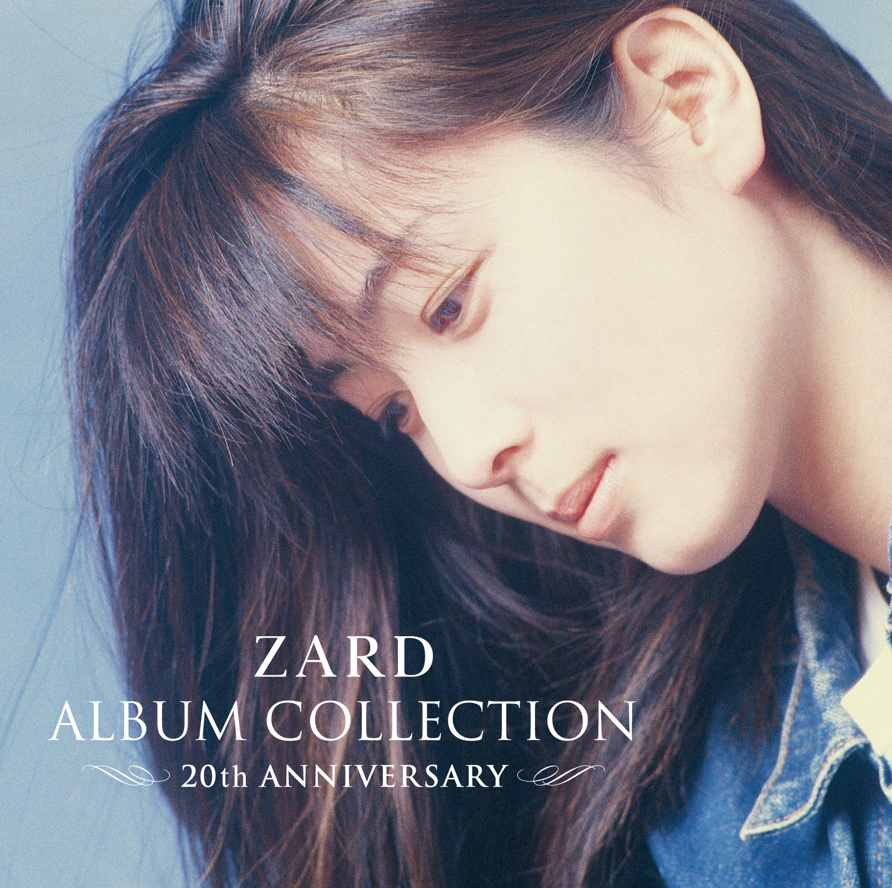 | |||||
| 2012.01.01 | |||||
| ZARD Forever Best ~25th Anniversary~ | ● Disc 0101. Don't you see!(Lyrics: Izumi Sakai / Music: Seiichiro Kuribayashi / Arrangement: Takeshi Hayama) 02. My Friend（マイ フレンド）(Lyrics: Izumi Sakai / Music: Tetsuro Oda / Arrangement: Takeshi Hayama) 03. Kono Ai ni Oyogi Tsukarete mo（この愛に泳ぎ疲れても）(Lyrics: Izumi Sakai / Music: Tetsuro Oda / Arrangement: Masao Akashi) 04. Good-bye My Loneliness(Lyrics: Izumi Sakai / Music: Tetsuro Oda / Arrangement: Masao Akashi) 05. WAKE UP MAKE THE MORNING LAST ~Wasuregataki Hito e~（WAKE UP MAKE THE MORNING LAST～忘れがたき人へ～）(Lyrics: Izumi Sakai / Music: Hiroya Fukuyama / Arrangement: Hirohito Furui) 06. Kimi ni Aitaku Nattara...（君に逢いたくなったら…）(Lyrics: Izumi Sakai / Music: Tetsuro Oda / Arrangement: Takeshi Hayama) 07. Iki mo Dekinai（息もできない）(Lyrics: Izumi Sakai / Music: Tetsuro Oda / Arrangement: Takeshi Hayama) 08. Ima Sugu Ai ni Kite（今すぐ会いに来て）(Lyrics: Izumi Sakai / Music: Seiichiro Kuribayashi / Arrangement: Masao Akashi) 09. High Heel Nugi Sutete（ハイヒール脱ぎ捨てて）(Lyrics: Izumi Sakai / Music: Seiichiro Kuribayashi / Arrangement: Masao Akashi) 10. Forever you(Lyrics: Izumi Sakai / Music: Tetsuro Oda / Arrangement: Masao Akashi) 11. Ashita wo Yume Mite（明日を夢見て）(Lyrics: Izumi Sakai / Music: Aika Ohno / Arrangement: Satoru Kobayashi) 12. Tsubasa wo Hirogete（翼を広げて）(Lyrics: Izumi Sakai / Music: Tetsuro Oda / Arrangement: Masao Akashi) 13. Ai wa Kurayami no Naka de featuring Aya Kamiki（愛は暗闇の中で featuring Aya Kamiki）(Lyrics: Izumi Sakai / Music: Seiichiro Kuribayashi / Arrangement: Siyon Morishita) ● Disc 0201. Hoshi no Kagayaki yo（星のかがやきよ）(Lyrics: Izumi Sakai / Music: Aika Ohno / Arrangement: Takeshi Hayama) 02. Natsu wo Matsu Sail (Ho) no You ni（夏を待つセイル(帆)のように）(Lyrics: Izumi Sakai / Music: Aika Ohno / Arrangement: Takeshi Hayama) 03. Kimi ga Inai（君がいない）(Lyrics: Izumi Sakai / Music: Seiichiro Kuribayashi / Arrangement: Masao Akashi) 04. Kokoro wo Hiraite（心を開いて）(Lyrics: Izumi Sakai / Music: Tetsuro Oda / Arrangement: Daisuke Ikeda) 05. Yureru Omoi（揺れる想い）(Lyrics: Izumi Sakai / Music: Tetsuro Oda / Arrangement: Masao Akashi) 06. Sunao ni Ienakute ~featuring Mai Kuraki~（素直に言えなくて ～featuring Mai Kuraki～）(Lyrics & Music: Izumi Sakai / Arrangement: Hitoshi Okamoto) 07. Oh my love(Lyrics: Izumi Sakai / Music: Tetsuro Oda / Arrangement: Masao Akashi) 08. Ame ni Nurete（雨に濡れて）(Lyrics: Izumi Sakai, Show Wesugi / Music: Seiichiro Kuribayashi / Arrangement: Masao Akashi) 09. I still remember(Lyrics: Izumi Sakai / Music: Seiichiro Kuribayashi / Arrangement: Masao Akashi) 10. Rainen no Natsu mo（来年の夏も）(Lyrics: Izumi Sakai / Music: Seiichiro Kuribayashi / Arrangement: Masao Akashi) 11. Anata ni Kaeritai（あなたに帰りたい）(Lyrics: Izumi Sakai / Music: Seiichiro Kuribayashi / Arrangement: Masao Akashi) 12. Ai ga Mienai（愛が見えない）(Lyrics: Izumi Sakai / Music: Masazumi Ozawa / Arrangement: Takeshi Hayama) 13. Hateshinai Yume wo（果てしない夢を）(Lyrics: Show Wesugi, Izumi Sakai / Music: Masayuki Deguchi / Arrangement: Masao Akashi) ● Disc 0301. Kakegae no Nai Mono（かけがえのないもの）(Lyrics: Izumi Sakai / Music: Aika Ohno / Arrangement: Satoru Kobayashi) 02. Tooi Hoshi wo Kazoete（遠い星を数えて）(Lyrics: Izumi Sakai / Music: Seiichiro Kuribayashi / Arrangement: Akihito Tokunaga) 03. Kaze ga Toori Nukeru Machi he（風が通り抜ける街へ）(Lyrics: Izumi Sakai / Music: Tetsuro Oda / Arrangement: Akihito Tokunaga) 04. DAN DAN Kokoro Hikareteku（DAN DAN 心魅かれてく）(Lyrics: Izumi Sakai / Music: Tetsuro Oda / Arrangement: Daisuke Ikeda) 05. Totsuzen（突然）(Lyrics: Izumi Sakai / Music: Tetsuro Oda / Arrangement: Takeshi Hayama) 06. Today is another day(Lyrics: Izumi Sakai / Music: Tetsuro Oda / Arrangement: Daisuke Ikeda) 07. Season(Lyrics: Izumi Sakai / Music: Seiichiro Kuribayashi / Arrangement: Takeshi Hayama) 08. Nemurenai Yoru wo Daite（眠れない夜を抱いて）(Lyrics: Izumi Sakai / Music: Tetsuro Oda / Arrangement: Masao Akashi, Daisuke Ikeda) 09. Konna ni Soba ni Iru no ni（こんなにそばに居るのに）(Lyrics: Izumi Sakai / Music: Seiichiro Kuribayashi / Arrangement: Masao Akashi) 10. Eien（永遠）(Lyrics: Izumi Sakai / Music & Arrangement: Akihito Tokunaga) 11. Sayonara wa Ima mo Kono Mune ni Imasu（サヨナラは今もこの胸に居ます）(Lyrics: Izumi Sakai / Music: Seiichiro Kuribayashi / Arrangement: Takeshi Hayama) 12. Nemuri（眠り）(Lyrics & Music: Izumi Sakai / Arrangement: Daisuke Ikeda) 13. Ano Hohoemi wo Wasurenaide（あの微笑みを忘れないで）(Lyrics: Izumi Sakai / Music: Daria Kawashima / Arrangement: Masao Akashi) ● Disc 0401. Mou Sukoshi Ato Sukoshi...（もう少し あと少し…）(Lyrics: Izumi Sakai / Music: Seiichiro Kuribayashi / Arrangement: Masao Akashi) 02. Get U're Dream(Lyrics: Izumi Sakai / Music: Aika Ohno / Arrangement: Takeshi Hayama) 03. IN MY ARMS TONIGHT(Lyrics: Izumi Sakai / Music: Michiya Haruhata / Arrangement: Masao Akashi) 04. Unmei no Roulette Mawashite（運命のルーレット廻して）(Lyrics: Izumi Sakai / Music: Seiichiro Kuribayashi / Arrangement: Daisuke Ikeda) 05. Shoujo no Koro ni Modotta Mitai ni（少女の頃に戻ったみたいに）(Lyrics: Izumi Sakai / Music: Aika Ohno / Arrangement: Daisuke Ikeda) 06. Kitto Wasurenai（きっと忘れない）(Lyrics: Izumi Sakai / Music: Tetsuro Oda / Arrangement: Masao Akashi) 07. Konna ni Aishitemo（こんなに愛しても）(Lyrics: Izumi Sakai / Music: Seiichiro Kuribayashi / Arrangement: Masao Akashi) 08. promised you(Lyrics: Izumi Sakai / Music: Seiichiro Kuribayashi / Arrangement: Cybersound) 09. GOOD DAY(Lyrics: Izumi Sakai / Music: Masaaki Watanuki / Arrangement: Daisuke Ikeda) 10. My Baby Grand ~Nukumori ga Hoshikute~（My Baby Grand～ぬくもりが欲しくて～）(Lyrics: Izumi Sakai / Music: Tetsuro Oda / Arrangement: Daisuke Ikeda) 11. Glorious Mind（グロリアス マインド）(Lyrics: Izumi Sakai / Music: Aika Ohno / Arrangement: Takeshi Hayama) 12. Anata wo Kanjiteitai（あなたを感じていたい）(Lyrics: Izumi Sakai / Music & Arrangement: Tetsuro Oda) 13. Makenaide（負けないで）(Lyrics: Izumi Sakai / Music: Tetsuro Oda / Arrangement: Takeshi Hayama) | 4CD B-Gram Records – JBCJ-9055-9058 (25th Anniversary Edition) 2016.02.10 4CD B-Gram Records – JBCJ-9055Z (Early Spring Jacket) 2017.02.08 4CD B-Gram Records – JBCJ-9055A (Early Summer Jacket) 2017.05.17 4CD B-Gram Records – JBCJ-9055R (Midsummer Jacket) 2017.08.09 4CD B-Gram Records – JBCJ-9055D (Autumn/Winter Jacket) 2017.11.15 4CD B-Gram Records – JBCJ-9055B (Rose Jacket) 2022.09.28 |
Fuji TV Network anime “Dragon Ball GT”（ドラゴンボールGT）2nd Ending Theme (Disc 1 / #1) TV Asahi Network anime “SLAM DUNK”（スラムダンク）4th Ending Theme (Disc 1 / #2) Kansai TV/Fuji TV Network drama “Ai to Giwaku no Suspense”（愛と疑惑のサスペンス）Opening Theme (Disc 1 / #3) Fuji TV Network drama “Kekkon no Risou to Genjitsu”（結婚の理想と現実）Theme Song (Disc 1 / #4) Clarion（クラリオン）Karaoke CF Song (Disc 1 / #4) TBS TV Network drama “Risou no Kekkon”（理想の結婚）Opening Theme (Disc 1 / #6) Fuji TV Network anime “Chuuka Ichiban!”（中華一番!）2nd Opening Theme (Disc 1 / #7) Fuji TV “OIOI TOKYO TASTE ROOMS” Ending Theme (Disc 1 / #9) Documentary film “Princess Diana” Theme Song (Disc 1 / #10) Yomiuri TV/Nippon TV Network anime “Meitantei Conan”（名探偵コナン）Ending Theme (Disc 1 / #11) Nationwide Toho Youga-kei Roadshow “Meitantei Conan Movie 12: Senritsu no Full Score”（名探偵コナン 戦慄の楽譜）Theme Song (Disc 1 / #12) Yomiuri TV/Nippon TV Network anime “Meitantei Conan”（名探偵コナン）Opening Theme (Disc 1 / #13) Yomiuri TV/Nippon TV Network anime “Meitantei Conan”（名探偵コナン）Opening Theme (Disc 2 / #1) Nationwide Toho Youga-kei Roadshow “Meitantei Conan Movie 09: Suihei Senjou no Strategy”（名探偵コナン 水平線上の陰謀）Theme Song (Disc 2 / #2) Yomiuri TV/Nippon TV Network drama “Kanojo no Kirai na Kanojo”（彼女の嫌いな彼女）Theme Song (Disc 2 / #3) Otsuka Pharmaceutical “Pocari Sweat” CM Song (Disc 2 / #4) Mitsubishi Motors Corporation ⑭ CM Song (Disc 2 / #4) Otsuka Pharmaceutical “Pocari Sweat” CM Song (Disc 2 / #5) Chiba TV Network music program' “MU-GEN〜Music Generations〜” October 2006 Opening Theme (Disc 2 / #5) Spotify (@SpotifyJP) “Anata no Hibi ni Ongaku wo: Jikka no Katazuke-hen 30-byou”（「あなたの日々に音楽を」実家の片付け篇 30秒）TV CM Song (Disc 2 / #5) Bristol-Myers Squibb “SEA BREEZE '95” CM Song (Disc 2 / #12) Nippon TV professional baseball broadcast image song (Disc 2 / #13) TBS TV Network dating variety show “Koisuru Hanikami!”（恋するハニカミ!）Theme Song (Disc 3 / #1) Japan Racing Association “'97 Summer JRA” Campaign Song (Disc 3 / #3) Nippon TV anime special “YAWARA! Zutto Kimi no Koto ga…”（YAWARA! ずっと君のことが…）Theme Song (Disc 3 / #6) TV Asahi Network wide show “Tonight”（トゥナイト）Ending Theme (Disc 3 / #8) TV Asahi Network drama “Love Story wo Kimi ni '92 〜Nemurenai Yoru wo Daite〜”（ラブストーリーを君に'92〜眠れない夜を抱いて〜）Theme Song (Disc 3 / #8) Boutique JOY（ブティックJOY）TV-CF Image Song (Disc 3 / #9) Yomiuri TV/Nippon TV Network drama “Shitsurakuen”（失楽園）Theme Song (Disc 3 / #10) Canon “NEW EOS Kiss” CM Song (Disc 3 / #10) Toei “Bokutachi no Eiga Series”（ぼくたちの映画シリーズ）film “Shiratori Reiko de Gozaimasu!”（白鳥麗子でございます!）Theme Song (Disc 3 / #11) Nationwide 28-Station Network program “J-ROCK ARTIST Count Down 50” Ending Theme (Disc 3 / #11) Fuji TV Network “Kinyou Entertainment”（金曜エンタテイメント）drama series “Udemakuri Kangofu”（腕まくり看護婦）Theme Song (Disc 3 / #13) TV Asahi Network drama “Lullaby Keiji '93”（ララバイ刑事'93）Ending Theme (Disc 4 / #1) NHK Sydney Olympics Broadcast Theme Song (Disc 4 / #2) TBS TV Network drama “Gakkou ga Abunai”（学校があぶない）Ending Theme (Disc 4 / #3) Yomiuri TV/Nippon TV Network anime “Meitantei Conan”（名探偵コナン）Opening Theme (Disc 4 / #4) Nationwide Toho Youga-kei Roadshow “Meitantei Conan Movie 02: 14-banme no Target”（名探偵コナン １４番目の標的）Theme Song (Disc 4 / #5) Fuji TV Network drama “Bokutachi no Drama Series”（ボクたちのドラマシリーズ）“Shiratori Reiko de Gozaimasu! Season 2”（白鳥麗子でございます! 第2シリーズ）Ending Theme (Disc 4 / #6) TV Asahi Network two-hour drama program “Doyou Wide Gekijou”（土曜ワイド劇場）Ending Theme (Disc 4 / #8) Beautylabo “Natural Color”（ナチュラルカラー）CM Song (Disc 4 / #9) NTT DoCoMo “DoCoMo '97 Winter”（ドコモ ’97-冬）CM Song (Disc 4 / #10) Yomiuri TV/Nippon TV Network anime “Meitantei Conan”（名探偵コナン）Opening Theme (Disc 4 / #11) TV Asahi Network news program “Super J Channel”（スーパーJチャンネル）Ending Theme for the December 14, 2007 Broadcast (Disc 4 / #11) Chiba TV Network music information program “MU-GEN〜Music Generations〜” December 2007 Opening Theme (Disc 4 / #11) NTT DoCoMo pager “Palfy V”（パルフィー V）CM Song (Disc 4 / #12) Fuji TV Network drama “Bokutachi no Drama Series”（ボクたちのドラマシリーズ）“Shiratori Reiko de Gozaimasu! Season 1”（白鳥麗子でございます! 第1シリーズ）Ending Theme (Disc 4 / #13) TV Saitama “Sydney 2000 Olympic Asian Qualifiers Send-Off Match”（シドニーオリンピック2000アジア地区予選 壮行試合）Theme Song (Disc 4 / #13) Nippon TV Network “13th All Japan High School Quiz Championship”（第13回全国高等学校クイズ選手権）Ending Theme (Disc 4 / #13) NTT DoCoMo Vancouver Olympics-related “Ou'en in Vancouver-hen”（応援 in バンクーバー篇）CM Song from February 10, 2010 (Disc 4 / #13) |
Wiki PV/CM |
|
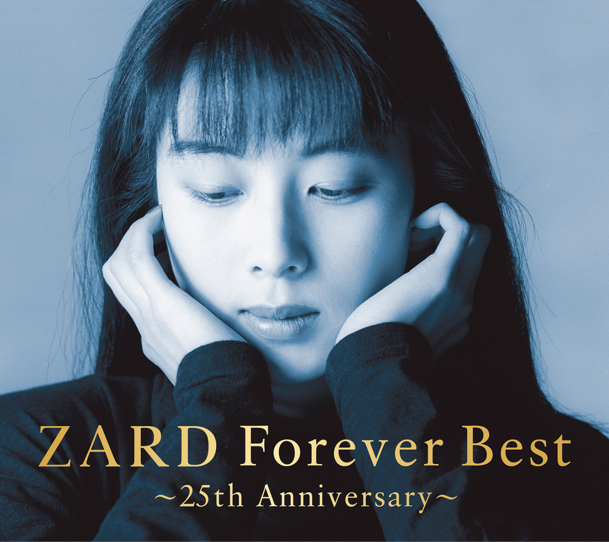 | |||||
| 2016.02.10 | |||||
| ZARD Best Request ~35th Anniversary~ | ● Disc 0101. Kokoro wo Hiraite（心を開いて）(Lyrics: Izumi Sakai / Music: Tetsuro Oda / Arrangement: Daisuke Ikeda) 02. Ano Hohoemi wo Wasurenaide（あの微笑みを忘れないで）(Lyrics: Izumi Sakai / Music: Daria Kawashima / Arrangement: Masao Akashi) 03. My Friend（マイ フレンド）(Lyrics: Izumi Sakai / Music: Tetsuro Oda / Arrangement: Takeshi Hayama) 04. Yureru Omoi（揺れる想い）(Lyrics: Izumi Sakai / Music: Tetsuro Oda / Arrangement: Masao Akashi) 05. Don't you see!(Lyrics: Izumi Sakai / Music: Seiichiro Kuribayashi / Arrangement: Takeshi Hayama) 06. Makenaide（負けないで）(Lyrics: Izumi Sakai / Music: Tetsuro Oda / Arrangement: Takeshi Hayama) 07. Iki mo Dekinai（息もできない）(Lyrics: Izumi Sakai / Music: Tetsuro Oda / Arrangement: Takeshi Hayama) 08. Kimi ni Aitaku Nattara...（君に逢いたくなったら…）(Lyrics: Izumi Sakai / Music: Tetsuro Oda / Arrangement: Takeshi Hayama) 09. Oh my love(Lyrics: Izumi Sakai / Music: Tetsuro Oda / Arrangement: Masao Akashi) 10. Tooi Hi no Nostalgia（遠い日のNostalgia）(Lyrics: Izumi Sakai / Music: Eisuke Mochizuki / Arrangement: Masao Akashi) ● Disc 0201. Kakegae no Nai Mono（かけがえのないもの）(Lyrics: Izumi Sakai / Music: Aika Ohno / Arrangement: Satoru Kobayashi) 02. Eien（永遠）(Lyrics: Izumi Sakai / Music & Arrangement: Akihito Tokunaga) 03. Good-bye My Loneliness(Lyrics: Izumi Sakai / Music: Tetsuro Oda / Arrangement: Masao Akashi) 04. DAN DAN Kokoro Hikareteku（DAN DAN 心魅かれてく）(Lyrics: Izumi Sakai / Music: Tetsuro Oda / Arrangement: Daisuke Ikeda) 05. Kitto Wasurenai（きっと忘れない）(Lyrics: Izumi Sakai / Music: Tetsuro Oda / Arrangement: Masao Akashi) 06. Natsu wo Matsu Sail (Ho) no You ni（夏を待つセイル(帆)のように）(Lyrics: Izumi Sakai / Music: Aika Ohno / Arrangement: Takeshi Hayama) 07. Today is another day(Lyrics: Izumi Sakai / Music: Tetsuro Oda / Arrangement: Daisuke Ikeda) 08. Nemurenai Yoru wo Daite（眠れない夜を抱いて）(Lyrics: Izumi Sakai / Music: Tetsuro Oda / Arrangement: Masao Akashi, Daisuke Ikeda) 09. Forever you(Lyrics: Izumi Sakai / Music: Tetsuro Oda / Arrangement: Masao Akashi) 10. Rainen no Natsu mo（来年の夏も）(Lyrics: Izumi Sakai / Music: Seiichiro Kuribayashi / Arrangement: Masao Akashi) 11. Unmei no Roulette Mawashite（運命のルーレット廻して）(Lyrics: Izumi Sakai / Music: Seiichiro Kuribayashi / Arrangement: Daisuke Ikeda) 12. Suki na You ni Odoritai no（好きなように踊りたいの）(Lyrics: Izumi Sakai / Music: Kazuya Izumi / Arrangement: Takeshi Hayama) ● Disc 0301. IN MY ARMS TONIGHT(Lyrics: Izumi Sakai / Music: Michiya Haruhata / Arrangement: Masao Akashi) 02. My Baby Grand ~Nukumori ga Hoshikute~（My Baby Grand～ぬくもりが欲しくて～）(Lyrics: Izumi Sakai / Music: Tetsuro Oda / Arrangement: Daisuke Ikeda) 03. Anata wo Kanjiteitai（あなたを感じていたい）(Lyrics: Izumi Sakai / Music & Arrangement: Tetsuro Oda) 04. Shoujo no Koro ni Modotta Mitai ni（少女の頃に戻ったみたいに）(Lyrics: Izumi Sakai / Music: Aika Ohno / Arrangement: Daisuke Ikeda) 05. Ame ni Nurete（雨に濡れて）(Lyrics: Izumi Sakai, Show Wesugi / Music: Seiichiro Kuribayashi / Arrangement: Masao Akashi) 06. Totsuzen（突然）(Lyrics: Izumi Sakai / Music: Tetsuro Oda / Arrangement: Takeshi Hayama) 07. Tomatteita Tokei ga Ima Ugokidashita（止まっていた時計が今動き出した）(Lyrics: Izumi Sakai / Music: Yuri Nakamura / Arrangement: Akihito Tokunaga) 08. Season(Lyrics: Izumi Sakai / Music: Seiichiro Kuribayashi / Arrangement: Takeshi Hayama) 09. Kono Ai ni Oyogi Tsukarete mo（この愛に泳ぎ疲れても）(Lyrics: Izumi Sakai / Music: Tetsuro Oda / Arrangement: Masao Akashi) 10. Mou Sukoshi Ato Sukoshi...（もう少し あと少し…）(Lyrics: Izumi Sakai / Music: Seiichiro Kuribayashi / Arrangement: Masao Akashi) 11. Sayonara wa Ima mo Kono Mune ni Imasu（サヨナラは今もこの胸に居ます）(Lyrics: Izumi Sakai / Music: Seiichiro Kuribayashi / Arrangement: Takeshi Hayama) 12. Ai ga Mienai（愛が見えない）(Lyrics: Izumi Sakai / Music: Masazumi Ozawa / Arrangement: Takeshi Hayama) 13. Tooi Hoshi wo Kazoete（遠い星を数えて）(Lyrics: Izumi Sakai / Music: Seiichiro Kuribayashi / Arrangement: Akihito Tokunaga) | 3CD+Memorial Acrylic Photo Block B-Gram Records – JBCJ-9083-9085 (Complete Production Limited Edition) 2025.02.10 3CD B-Gram Records – JBCJ-9086-9088 (Regular Edition) 2025.02.10 3CD+Lyric Block B-Gram Records – JBCJ-9086-9088-01-35 (Musing Exclusive / 35 Jacket Variants) 2025.02.10 |
Otsuka Pharmaceutical “Pocari Sweat” CM Song (Disc 1 / #1) Mitsubishi Motors Corporation ⑭ CM Song (Disc 1 / #1) Fuji TV Network “Kinyou Entertainment”（金曜エンタテイメント）drama series “Udemakuri Kangofu”（腕まくり看護婦）Theme Song (Disc 1 / #2) TV Asahi Network anime “SLAM DUNK”（スラムダンク）4th Ending Theme (Disc 1 / #3) Otsuka Pharmaceutical “Pocari Sweat” CM Song (Disc 1 / #4) Chiba TV Network music program' “MU-GEN〜Music Generations〜” October 2006 Opening Theme (Disc 1 / #4) Spotify (@SpotifyJP) “Anata no Hibi ni Ongaku wo: Jikka no Katazuke-hen 30-byou”（「あなたの日々に音楽を」実家の片付け篇 30秒）TV CM Song (Disc 1 / #4) Fuji TV Network anime “Dragon Ball GT”（ドラゴンボールGT）2nd Ending Theme (Disc 1 / #5) Fuji TV Network drama “Bokutachi no Drama Series”（ボクたちのドラマシリーズ）“Shiratori Reiko de Gozaimasu! Season 1”（白鳥麗子でございます! 第1シリーズ）Ending Theme (Disc 1 / #6) TV Saitama “Sydney 2000 Olympic Asian Qualifiers Send-Off Match”（シドニーオリンピック2000アジア地区予選 壮行試合）Theme Song (Disc 1 / #6) Nippon TV Network “13th All Japan High School Quiz Championship”（第13回全国高等学校クイズ選手権）Ending Theme (Disc 1 / #6) NTT DoCoMo Vancouver Olympics-related “Ou'en in Vancouver-hen”（応援 in バンクーバー篇）CM Song from February 10, 2010 (Disc 1 / #6) Fuji TV Network anime “Chuuka Ichiban!”（中華一番!）2nd Opening Theme (Disc 1 / #7) TBS TV Network drama “Risou no Kekkon”（理想の結婚）Opening Theme (Disc 1 / #8) TBS TV Network dating variety show “Koisuru Hanikami!”（恋するハニカミ!）Theme Song (Disc 2 / #1) Yomiuri TV/Nippon TV Network drama “Shitsurakuen”（失楽園）Theme Song (Disc 2 / #2) Canon “NEW EOS Kiss” CM Song (Disc 2 / #2) Fuji TV Network drama “Kekkon no Risou to Genjitsu”（結婚の理想と現実）Theme Song (Disc 2 / #3) Clarion（クラリオン）Karaoke CF Song (Disc 2 / #3) Fuji TV Network drama “Bokutachi no Drama Series”（ボクたちのドラマシリーズ）“Shiratori Reiko de Gozaimasu! Season 2”（白鳥麗子でございます! 第2シリーズ）Ending Theme (Disc 2 / #5) Nationwide Toho Youga-kei Roadshow “Meitantei Conan Movie 09: Suihei Senjou no Strategy”（名探偵コナン 水平線上の陰謀）Theme Song (Disc 2 / #6) Nippon TV anime special “YAWARA! Zutto Kimi no Koto ga…”（YAWARA! ずっと君のことが…）Theme Song (Disc 2 / #7) TV Asahi Network wide show “Tonight”（トゥナイト）Ending Theme (Disc 2 / #8) TV Asahi Network drama “Love Story wo Kimi ni '92 〜Nemurenai Yoru wo Daite〜”（ラブストーリーを君に'92〜眠れない夜を抱いて〜）Theme Song (Disc 2 / #8) Documentary film “Princess Diana” Theme Song (Disc 2 / #9) Yomiuri TV/Nippon TV Network anime “Meitantei Conan”（名探偵コナン）Opening Theme (Disc 2 / #11) TBS TV Network drama “Gakkou ga Abunai”（学校があぶない）Ending Theme (Disc 3 / #1) NTT DoCoMo “DoCoMo '97 Winter”（ドコモ ’97-冬）CM Song (Disc 3 / #2) NTT DoCoMo pager “Palfy V”（パルフィー V）CM Song (Disc 3 / #3) Nationwide Toho Youga-kei Roadshow “Meitantei Conan Movie 02: 14-banme no Target”（名探偵コナン １４番目の標的）Theme Song (Disc 3 / #4) TV Asahi drama “Igi Ari! Onna Bengoshi Ooka Norie”（異議あり! 女弁護士大岡法江）Theme Song (Disc 3 / #7) Kansai TV/Fuji TV Network drama “Ai to Giwaku no Suspense”（愛と疑惑のサスペンス）Opening Theme (Disc 3 / #9) TV Asahi Network drama “Lullaby Keiji '93”（ララバイ刑事'93）Ending Theme (Disc 3 / #10) Toei “Bokutachi no Eiga Series”（ぼくたちの映画シリーズ）film “Shiratori Reiko de Gozaimasu!”（白鳥麗子でございます!）Theme Song (Disc 3 / #11) Nationwide 28-Station Network program “J-ROCK ARTIST Count Down 50” Ending Theme (Disc 3 / #11) Bristol-Myers Squibb “SEA BREEZE '95” CM Song (Disc 3 / #12) |
Wiki PV/CM |
|
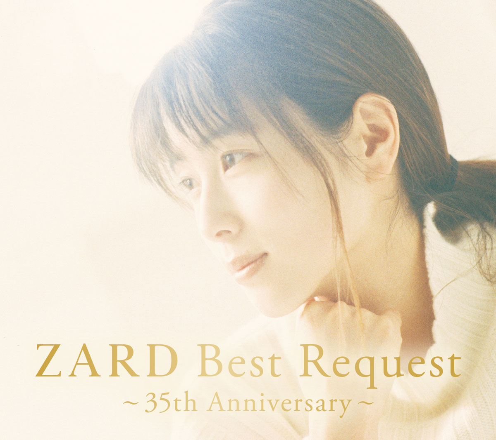 | |||||
| 2025.02.10 |